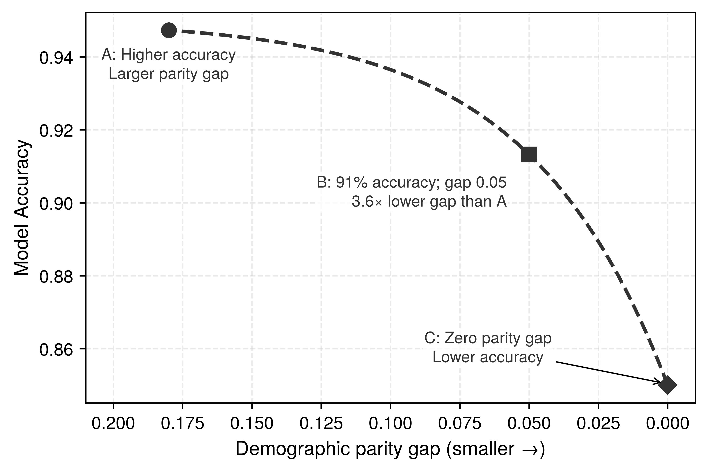
Содержание главы
Содержание
- 15 Ответственный инжиниринг
15 Ответственный инжиниринг
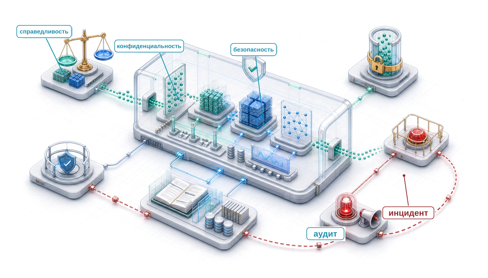
Назначение
Почему система, делающая в точности то, что ей велели, всё же может причинить вред?
Целевые показатели задержки, доступности и точности не говорят о том, описывают ли они правильное поведение, кому служит система и какие издержки её спецификация оставляет неизмеренными. МЛ-система может удовлетворять требованиям к задержке, пропускной способности и агрегированной точности и при этом воспроизводить историческую дискриминацию, поощрять вредную вовлечённость, потреблять неоправданное количество энергии или использовать данные без надлежащего контроля приватности и подотчётности. Такая система не вышла из строя — она эффективно оптимизирует неполную спецификацию. Опущенные ограничения проявляются как неравномерные исходы для разных групп населения, совокупная стоимость и выбросы за жизненный цикл, решения, которые люди не могут понять или оспорить, и доказательства, которые невозможно восстановить после того, как вред уже нанесён. Если эти последствия не определены как требования до развёртывания и не отслеживаются после него, обычные проверки работоспособности могут оставаться «зелёными», пока вред накапливается. Кредитная модель, по-разному относящаяся к группам, может повторить это решение миллионы раз, прежде чем кто-либо агрегирует исходы, — и всё это время её дашборды рапортуют о здоровой задержке и точности. Ответственный инжиниринг трактует такие исходы как отказы системы, подлежащие диагностике, измерению и устранению с той же строгостью, что и регрессии задержки или точности. Эта работа требует перевода широких обязательств в проверяемые границы, документированные допущения, прослеживаемые данные и пути реагирования, сохраняющие силу в эксплуатации, чтобы вред, обнаруженный после запуска, можно было отследить и исправить. В терминах D·A·M ответственность расширяет определение корректности: данные должны проверяться на закодированный вред и правомерность использования, алгоритмы должны быть ограничены обоснованными требованиями к исходам и эффективности, а машинная инфраструктура должна отслеживать, документировать и обеспечивать соблюдение этих границ на всём жизненном цикле системы.
Цели обучения
- Объяснить, как модель, выполняющая свою обучающую цель, может всё же причинить вред, когда эта цель — прокси, отклоняющийся от действительной цели
- Применить диагностику «данные — алгоритм — машина» для локализации отказов ответственности в данных, целях алгоритмов или инфраструктуре мониторинга
- Вычислять метрики справедливости по матрицам ошибок и сравнивать компромиссы на Парето-фронтире «справедливость — точность»
- Спроектировать дезагрегированные критерии выпуска и мониторинг по группам, подогнав модель обратной связи по смещению так, чтобы предсказать, когда модель, прошедшая критерии, их нарушит
- Анализировать совокупную стоимость, доминирование инференса и углеродный след как измеримые ограничения ответственности
- Построить карточки моделей, паспорта данных, записи происхождения и журналы аудита для подотчётности
- Оценить дизайн приватности, контроля доступа и соответствия требованиям против регуляторных требований и требований человеческого контроля
15.1 Ответственность как системный инжиниринг
Кредитная модель решает, чьи заявки на кредит будут одобрены; модель ранжирования решает, что видят миллионы людей; голосовой ассистент решает, когда аудио из частной комнаты покидает устройство. Ни один из этих исходов не виден на кривой потерь или дашборде задержки, но каждая развёрнутая модель их определяет. Система может выполнять все целевые показатели задержки, доступности и агрегированной точности и при этом отклонять квалифицированных заявителей из числа меньшинств, усиливать кликбейт или утекать частное аудио. Ответственный инжиниринг — это системный инжиниринг, применённый к последствиям, которые цель модели оставляет неописанными: чьи ошибки делает система, сколько энергии и денег расходует каждое решение и можно ли впоследствии объяснить, отследить и исправить вредное решение. Каждый из этих исходов определяется конкретными инженерными решениями о данных, целях и инфраструктуре.
Эксплуатация систем машинного обучения построил механизм, который удерживает развёрнутую модель верной её цели по мере изменения данных и трафика, и этот механизм предполагает, что цель была правильной. Если MLOps — контур управления для надёжности, то ответственный инжиниринг — контур управления для безопасности. Там, где MLOps отслеживает работоспособность в рантайме и предсказательное качество, направляя операционное реагирование, ответственный инжиниринг отслеживает распределения исходов, направляя вмешательство, когда системы порождают вред.
В терминах системного инжиниринга модель может пройти верификацию (точное соответствие заданной обучающей цели) и провалить валидацию (невыполнение эксплуатационных, требований безопасности или юридических требований) (National Aeronautics and Space Administration 2016 г.). Разрыв верификации (принцип «Разрыв верификации») касается первого из этих видов деятельности. Он утверждает, что никакое конечное множество тестов не доказывает соответствие; тест может лишь ограничить — при заданном уровне доверия — то, как часто ошибка модели остаётся в допуске на названной популяции развёртывания. Валидация вместо этого спрашивает, правильной ли была сама спецификация. Модель, прошедшая верификацию и провалившая валидацию, страдает от неполной спецификации, а не от ошибки исполнения компилятора или численной оптимизации.
↩︎ Непрерывные контуры телеметрии и автоматического дообучения для операционной надёжности введены в Пять операционных принципов.
Традиционная программная инженерия изолирует дефекты внутри модулей, хотя общие зависимости всё же могут распространять отказы. Системы машинного обучения вводят зависимость от данных. Данные проходят через общие представления, поэтому повреждённые или смещённые входы изменяют плотные матрицы параметров, обслуживающие каждый последующий инференс. Смещённый обучающий датасет не вызывает ошибку компиляции и падения в рантайме; он незаметно сдвигает границы принятия решений по всей системе. Прочитанная с точки зрения ответственности, а не производительности, таксономия D·A·M локализует, где зарождаются такие отказы: нерепрезентативные или смещённые входы (Data), несогласованные формулировки функции потерь (Algorithm) или слепые зоны телеметрии и неоправданный занимаемый объём памяти в обслуживающей инфраструктуре (Machine). К моменту, когда такой отказ проявляется в продакшене, смещённые данные или несогласованная цель уже сформировали каждый вес, поэтому ответственность должна быть спроектирована заранее, а не наложена на систему после развёртывания.
↩︎ Таксономия D·A·M, классифицирующая узкое место системы по осям данных, алгоритма и машины, введена в Определение МЛ-систем.
Ответственный инжиниринг расширяет определение корректности для систем машинного обучения. Традиционная корректность (численная устойчивость, ограниченная задержка и высокая доступность сервиса) остаётся необходимой, но недостаточной. Продакшен-система должна удовлетворять более широким эксплуатационным границам: ограниченным расхождениям ошибок между демографическими срезами, обоснованным затратам энергии и прослеживаемому происхождению данных. Это расширенное понятие корректности применяет инженерную дисциплину к видам отказов, которые игнорируют агрегированные метрики производительности. Всплеск p99-задержки вызывает автоматические оповещения на операционном дашборде. Регрессия демографической справедливости остаётся невидимой для агрегированных метрик потерь, пока не произойдёт реальный вред, а когда решения модели формируют её собственные будущие обучающие данные, скрытое расхождение может расти с каждым циклом дообучения (принцип «Модель обратной связи по смещению»). Оба случая требуют строгой телеметрии и автоматизированного регрессионного тестирования. Оптимизации предыдущих глав наследуют ту же слепую зону, потому что каждая из них оценивалась по тем статьям издержек, которые измерял её бенчмарк.
Системный взгляд 15.1: Полная стоимость железного закона
Железный закон МЛ-систем (принцип «Железный закон ML-систем») раскладывает время исполнения на перемещение данных, вычисления и фиксированные накладные расходы. Сжатие моделей, ускорение аппаратуры и автоматизация операций оптимизируют каждую из этих статей. Однако оптимизация может создавать или переносить издержки, которые её бенчмарк не учитывает.
Квантизованная для edge-развёртывания модель может потреблять меньше энергии, но её потеря точности не обязательно распределяется равномерно по демографическим группам, поэтому сжатую модель нужно заново валидировать на тех же подгрупповых срезах, что и исходную. Модель ранжирования, оптимизированная на вовлечённость, — такая как рекомендационный маяк DLRM — максимизирует бизнес-метрику, но может усиливать вредный контент. Ответственный инжиниринг расширяет эту отчётность, включая более широкие воздействия: углеродную стоимость вычислений, стоимость справедливости в выборе оптимизаций и общественную стоимость развёртывания в масштабе. Железный закон учитывает, насколько быстро работает система, и ничего не говорит о том, кому она служит хорошо.
Три сквозных кейса ведут главу, и каждый выбран потому, что вскрывает особый вид отказа ответственности. Первый — кредитный сервис, размеченный композит, а не документированное развёртывание: классификатор, одобряющий или отклоняющий кредитные заявки и сконструированный так, чтобы каждый критерий справедливости в главе можно было вычислить по его матрицам ошибок. Критериям справедливости нужны размеченные решения о людях, а ни одна из моделей-маяков таких решений не принимает, поэтому глава прорабатывает этапы спецификации, измерения, объяснения и мониторинга таких решений на этом композите. Второй — сервис ранжирования DLRM, маяк, ограниченный по ёмкости. Его ранжирование решает, что видят люди, поэтому клики, на которых он обучается, формируются его же предыдущими выходами, а объём запросов делает его кейсом главы для обратной связи, экспозиции, стоимости и углерода. Третий — система keyword spotting (KWS), маяк, ограниченный по энергопотреблению, — всегда включённый микрофон в частных домах, чей дизайн должен решать, какое аудио может покинуть устройство; это кейс для приватности, происхождения и аудита.
Глава ведёт эти кейсы через этапы жизненного цикла, на которых каждый отказ ещё дёшево предотвратить (Таблица 1). Третий столбец таблицы называет, чего каждое средство стоит для машины, и каждая из этих стоимостей раскрывается в разделе, где вводится само средство. Глава 15.2 объясняет, почему оптимизация может преуспеть, пока система терпит неудачу: из-за прокси-целей, контуров обратной связи и сдвига распределения, из-за которых все проверки работоспособности остаются «зелёными». Глава 15.3 затем прорабатывает четыре связанных этапа на кредитном сервисе: спецификация требований до обучения, измерение критериев справедливости, которым должен соответствовать релиз, объяснение решений и документирование моделей, а также эксплуатация развёрнутой модели так, чтобы её расхождение оставалось ограниченным при наличии обратной связи. Глава 15.4 измеряет энергию, углерод и деньги, которые каждый этап потребляет на сервисе DLRM. Глава 15.5 строит на системе KWS инфраструктуру управления (контроль доступа, приватность, регуляторные возможности, происхождение и аудит), которая делает каждое из предшествующих гарантий доказуемым для кого-то вне команды.
| Раздел или этап | Какой отказ устраняет | Что стоит машине | Сквозной кейс |
|---|---|---|---|
| Разрыв инженерной ответственности | Прокси-цели, контуры обратной связи и сдвиг, из-за которых проверки остаются «зелёными» | Пока ничего; диагностика локализует отказ на оси данных, алгоритма или машины | Кредитный сервис, DLRM |
| Жизненный цикл: спецификация | Требования, которые никто не записал: цель, популяции, человеческий контроль | Размеченные данные оценки для каждой названной подгруппы; часы ревьюера на каждое эскалированное решение | Кредитный сервис |
| Жизненный цикл: измерение | Расхождения, скрытые агрегированной точностью | Оценка по срезам; смягчающее дообучение со второй сеточной «головой» и большим объёмом поиска | Кредитный сервис |
| Жизненный цикл: объяснение и документирование | Решения, которые никто не может оспорить; модели, используемые вне их ограничений | Вычисления объяснений на пути обслуживания, экспоненциальные по числу признаков для точной атрибуции | Кредитный сервис, MobileNetV2 |
| Жизненный цикл: эксплуатация | Расхождение, растущее через обратную связь дообучения | Телеметрия по группам; трафик рандомизированного исследования, обслуживаемый с меньшей ожидаемой ценностью | Кредитный сервис, DLRM |
| Экологическая и стоимостная осознанность | Энергия, выбросы и издержки, не оправданные задачей | Ускоритель-часы, киловатт-часы и килограммы CO2 за срок жизни сервиса | DLRM |
| Управление данными и соответствие требованиям | Доказательства, которые невозможно восстановить после вреда | Байты журналов аудита, хранилище происхождения, шум приватности и его стоимость по памяти, дообучение для удаления | KWS |
15.2 Разрыв инженерной ответственности
Кредитный сервис может одобрять 90 percent квалифицированных заявителей из группы большинства, но лишь 60 percent столь же квалифицированных заявителей из группы меньшинства — и при этом рапортовать высокую агрегированную точность, потому что группа меньшинства даёт лишь малую долю оцениваемых заявителей. Разбор в Глава 15.3.2.1 вычисляет ровно этот исход по матрицам ошибок. Разрыв ответственности между этой технической корректностью и ответственными исходами — это расстояние, которое традиционное тестирование не измеряет. Разрыв открывается на этапе обучения, когда оптимизатор добросовестно выучивает смещённые исторические сигналы или порочный прокси-таргет, и расширяется в продакшене через сдвиг распределения, рассогласование метрик и контуры обратной связи, невидимые для обычных проверок работоспособности.
15.2.1 Когда оптимизация удалась, а система — нет
Первый сценарий возникает ещё до того, как модель встречается с реальным трафиком, — когда оптимизация успешно выполняется на обучающих данных или на целевой величине, которые уже содержат вред. В экспериментальном инструменте рекрутинга Amazon (история из Слои ограничений) модель, обученная на десятилетии исторических данных о найме, добросовестно оптимизировала заданную ей цель, однако эти исторические закономерности заключали в себе гендерное смещение, которое система напрямую воспроизвела в оценках кандидатов (Dastin 2018 г.). Этот отказ лежит на оси данных таксономии D·A·M, поскольку он проистекал из исторического обучающего сигнала, а не из дефекта алгоритма или программного обеспечения.
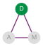
Отказ Amazon происходит по оси данных, а не алгоритма.
При эмпирической минимизации риска — стандартном правиле обучения, минимизирующем средние потери на обучающих примерах, — модель уменьшала ошибку классификации, отыскивая пословные корреляции по корпусу резюме. Поскольку прошлые технические наймы приходились преимущественно на мужчин, слова, связанные с женскими колледжами, организациями или занятиями, коррелировали отрицательно с положительными метками найма. Оптимизатор добросовестно извлёк эмпирическое распределение обучающих данных, но это распределение отражало прошлую практику найма, а не компетентность кандидатов. Текстовые представления высокой размерности улавливают и усиливают такие статистические закономерности, запекая социальные смещения прямо в векторы, которые потребляют последующие модели (Bolukbasi и др. 2016 г.).
Amazon попыталась исправить модель, удалив явные гендерные индикаторы и слова с гендерной окраской из обучающего конвейера. Это изменение не дало беспристрастных рекомендаций, поскольку пространства признаков высокой размерности содержат прокси-переменные, сохраняющие демографический сигнал.1 Очистка отдельных атрибутов оставляет нетронутыми коррелирующие признаки: почтовые индексы коррелируют с расой через жилую сегрегацию, имена заявителей — с этничностью, расходы на здравоохранение — с социально-экономическими условиями. В конвейере резюме Amazon даже после удаления явных гендерных терминов оставшийся словарь (посещение определённых колледжей или участие в конкретных студенческих организациях) продолжал кодировать паттерны, коррелирующие с полом (Dastin 2018 г.). Поэтому удаления защищаемых атрибутов из обучающих данных недостаточно, чтобы гарантировать справедливость.
Закрыть этот разрыв требуют изменений на всём жизненном цикле системы, а не поверхностного фильтра данных. До развёртывания отдельная оценка каждого демографического подмножества показывает, как различаются оценки между группами. Когда такие срезы вскрывают неравенство, митигации на этапе обучения — например, состязательное устранение смещения (разобранное на учебном примере кредитного сервиса в Глава 15.3.2.1) — могут подавить сигнал защищаемых атрибутов в выученных представлениях, хотя и они требуют непрерывной валидации по подгруппам. Когда модель работает, ручная проверка пограничных оценок даёт операционную защиту лишь тогда, когда проверяющие обучены, уполномочены и сами проходят аудит, а не используются для штампования выводов модели. Последующий мониторинг также отслеживает исходы найма во времени, чтобы замечать разноплановое воздействие, скрытое офлайн-метриками потерь. Единственным документированным исправлением стало удаление гендерных терминов, а когда оно не смогло гарантировать беспристрастные оценки, компания закрыла проект (Dastin 2018 г.).
Тот же исход может возникать и по оси алгоритма — в выборе цели, а не в данных. Когда сама целевая величина отражает исторические несправедливости, обучающая цель кодирует эти неравенства в границы решений модели, и вред достаётся той подгруппе, которую цель измеряет неверно. Редактирование данных такой отказ не починит, потому что данные добросовестно записывают не ту величину. Версия на оси алгоритма проявилась с угрожающими жизни последствиями в клиническом управлении помощью.
Практический случай 15.1: Ловушка прокси-переменной (2019)
Контекст: В 2019 году Зиад Обермейер и коллеги из Калифорнийского университета в Беркли провели аудит коммерческого алгоритма Optum, использовавшегося системами здравоохранения для зачисления пациентов со сложными потребностями в программы управления высокорисковой помощью; были изучены около пятидесяти тысяч пациентов одной крупной академической больницы (Obermeyer и др. 2019 г.).
Механизм: Модель предсказывала «будущие расходы на здравоохранение» как прокси «будущей потребности в здоровье». Поскольку система здравоохранения США тратит на чернокожих пациентов меньше, чем на белых пациентов при том же уровне болезни, алгоритм выучил эту закономерность и назначал чернокожим пациентам более низкие оценки риска.
Воздействие: При любой заданной оценке риска чернокожие пациенты несли существенно больше хронических заболеваний, чем белые, что снижало долю чернокожих пациентов, зачисленных в специализированную помощь.
Реакция: Исследование показало, что замена расходов прямым измерением потребности в здоровье повысила бы долю чернокожих пациентов, выявленных для дополнительной помощи, с 17,7 до 46,5 процента на анализируемом пороге.
Урок для систем: Оптимизация по прокси наследует смещения системы, породившей этот прокси. Связь прокси с целью должна проверяться по каждому демографическому подмножеству, которое обслуживает система.
Инструмент рекрутинга и алгоритм управления помощью показывают, что успех оптимизации может сосуществовать с отказом системы. Ни одно неравенство не сводится к программной ошибке или аппаратному сбою, поскольку каждая модель работала как построенная и всё же не справилась с предназначенным применением. Архитектурный вопрос — улавливает ли постановка проблемы приемлемые исходы. Когда техническая цель (например, минимизация эмпирической ошибки предсказания) расходится с спецификацией системы (справедливые, обоснованные исходы для популяций пользователей), улучшение обучающей цели может сохранять или усиливать вред.
Стандартная производственная телеметрия не способна обнаружить отказы спецификации. Мониторинговые конвейеры отслеживают задержку инференса, потребление памяти, пропускную способность и агрегированные валидационные потери — и всё это остаётся зелёным, пока модель систематически распределяет ошибки между подгруппами. Чтобы предотвратить тихие отказы спецификации, метрики ответственности должны стать частью основного тестового обвеса: проверка того, служит ли функция потерь обоснованным прокси истинной цели системы, и принудительное применение обоснованного, зависящего от приложения критерия справедливости до развёртывания.
Контрольная точка 15.1: Ответственный дизайн
Ответственность — свойство системы, а не модели.
Виды отказов
Проверка
15.2.2 Тихие виды отказов

Одно вышестоящее изменение; многие незаметно затронуты.
Даже модель, чьи обучающие данные и цель были проверены перед запуском, может незаметно отказать в производстве, когда меняется окружающая её среда. Рассмотрим кредитный сервис после изменения онлайн-формы заявки, которое меняет способ записи дохода самозанятых заявителей. Модель начинает отклонять заявителей, которых одобрила бы неделей ранее. Единственное вышестоящее изменение распространяется по радиусу поражения системы (множество нижестоящих решений и стоящих за ними заявителей, которых достигает одно вышестоящее изменение), не поднимая тревоги. Оценки уверенности модели остаются высокими, задержка инференса укладывается в соглашение об уровне обслуживания, все проверки здоровья системы зелёные. Отказ тихий. Распределение входных данных сместилось, но конвейер сервиса мониторит лишь здоровье сервиса и не несёт мониторов дрейфа.
↩︎ Мониторы дрейфа, количественно оценивающие расхождение распределений между обслуживающими и обучающими данными, вводятся в Статистический мониторинг и обнаружение дрейфа.
Мониторинг, ориентированный на доступность, не может обнаружить этот класс отказов. Это тихая деградация из Когда МЛ-системы выходят из строя незаметно, в которой статистические виды отказов порождают деградировавшие выходы, неотличимые от валидных предсказаний, при том что каждое ядро укладывается в свой бюджет задержки. Вопрос ответственности — до кого дойдут деградировавшие выходы.
Сдвиг распределения — распределение входов при развёртывании, отличающееся от того, на котором модель разрабатывалась и оценивалась, — первый крупный механизм этой тихой деградации. Его формы — ковариатный, ярлыковый и концептуальный сдвиг — и статистики расхождения, их обнаруживающие, разбираются в инженерии данных (см. поле). Отказ здесь environmental. Физическое распределение входов изменилось после обучения, но у модели нет внутренней телеметрии, чтобы обнаружить расхождение. Через призму ответственности ловушка обостряется, поскольку сдвиг часто достаётся сначала одной подгруппе, где популяционная статистика расхождения едва шевелится, а концептуальный дрейф на этом срезе остаётся невидимым, пока его исходы не получат ярлыки. Монитор, адекватный для популяции, может быть слеп к людям, которых сдвиг настигает первым.
↩︎ Ковариатный, ярлыковый и концептуальный дрейф, а также статистики расхождения, их обнаруживающие, вводятся в Обнаружение дрейфа данных и реакция на него.
Дообучение на свежих данных может частично восстановить точность при сдвиге распределения. Однако дообучение не решает второй, более глубокий механизм тихого отказа, сохраняющийся даже при идеально стационарном распределении данных: рассогласование метрики.
Рассогласование метрики возникает, когда функция цели оптимизирует наблюдаемый прокси-метрик, расходящийся с ненаблюдаемым исходом, который система призвана доставить. Закон Гудхарта — ловушка бенчмаркинга, когда мера, оптимизируемая как цель, перестаёт измерять цель, — действует здесь сильнее, чем в бенчмаркинге, потому что обучающая цель и есть цель. Градиентный спуск ищет в этой цели куда более исчерпывающе, чем команда, подстраивающаяся под бенчмарк. До некоторого момента прокси и цель улучшаются вместе; после этой точки дальнейшая оптимизация покупает выигрыш прокси ценой цели.
↩︎ Закон Гудхарта, по которому бенчмарк-метрика, оптимизируемая как цель, перестаёт измерять цель, вводится в Разрыв «бенчмарк–производство».
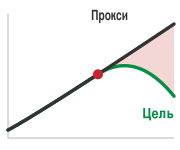
За коленом прокси отвязывается от цели.
Системный взгляд 15.2: Разрыв согласованности
Сервис ранжирования DLRM оптимизирует прокси-метрик (Clicks), поскольку истинная метрика (User Satisfaction) ненаблюдаема, и две они могут резко расходиться. В иллюстративной версии сервиса
Падающая корреляция — симптом. Она показывает, что две метрики больше не движутся вместе, но не то, насколько далеко они разошлись, поэтому важная величина — насколько сильно движение прокси преувеличивает движение цели, что фиксирует Уравнение 1 для метрик, нормированных на общий масштаб:
Пусть обе метрики начинаются с одного нормированного значения
Системный вывод: Инженеры не могут напрямую оптимизировать ненаблюдаемую цель. Им нужна обоснованная валидация прокси. Рандомизированный holdout — небольшой случайный срез пользователей, обслуживаемых без нового ранжирования, — может оценить причинный эффект ранжирования (разницу между исходами пользователей, видевших новое ранжирование, и не видевших) и тем самым ограничить разрыв, но лишь когда измеряемый исход holdout отражает цель или обоснованный её заменитель.
Разрыв согласованности — отказ, зарождающийся на оси алгоритма, где функция потерь оптимизирует неверно заданную цель, так что даже модель, обобщающая с нулевой тестовой ошибкой, порождает исходы, конфликтующие с организационными или общественными целями. Сдвиг распределения, напротив, зарождается на оси данных. Логика модели остаётся целой, но распределение входов отклоняется от обучающего. Оба отказа могут быть тихими, но они подсказывают разные первые вмешательства: перепроектирование цели для неверно заданной цели, либо исследование конвейера и возможная адаптация для сместившихся входов. Эти средства могут быть взаимодополняющими, когда присутствуют оба механизма. Изоляция первопричины — та работа, которую таксономия D·A·M уже выполняет для узких мест производительности, а perspective 15.3 читает те же три оси для отказов ответственности.
↪ Вид диагностики D·A·M для узких мест производительности — от симптома профилировщика до ограничивающей оси — собран для справки в Одномашинные основы.
Системный взгляд 15.3: Диагностика нарушений ответственности с помощью D·A·M
Когда система наносит вред, используйте таксономию D·A·M, чтобы выявить первопричину. Отказы ответственности редко бывают «ошибками алгоритма» — это структурные изъяны вдоль одной из трёх осей:
- Данные (информация): обучающий корпус отражает исторические смещения или нерепрезентативную выборку (например, инструмент подбора персонала Amazon, обучавшийся на смещённых исторических данных о кандидатах).
- Алгоритм (логика): целевая функция оптимизирует неограниченную прокси-метрику, усиливающую вред (например, оптимизация вовлечённости, ведущая к поляризации).
- Машина (физика): инфраструктура обслуживания и управления не видит и не ограничивает вред — из-за телеметрии, которая никогда не разбивает исходы по подгруппам, отсутствия записей происхождения данных и аудита либо из-за занимаемого объёма энергии и углеродного следа, превышающего общественную пользу от развёртывания (например, сверхпараметризованная фундаментальная модель, обслуживающая задачу низкой сложности).
Определение доминирующего отказа в таксономии указывает первую меру для проверки: более качественное курирование (Данные), более безопасные целевые функции (Алгоритм) или лучше инструментированная и более эффективная инфраструктура (Машина). Реальные отказы могут охватывать несколько осей, поэтому вмешательство всё равно нужно оценивать сквозным образом.
Таксономия D·A·M локализует, где начинается отказ, а производственная телеметрия должна улавливать, когда он проявляется. Статистические отказы (дефекты качества данных, сдвиг распределения и нарушения справедливости) могут сохраняться днями или месяцами за «зелёными» проверками работоспособности (Мониторинг в промышленной эксплуатации), причём нарушение справедливости проявляется медленнее всего, поскольку оно видно только на подгруппе и только после того, как исходы размечены. Хуже того, самые трудные немые отказы не остаются в пределах одной оси D·A·M.
Когда предсказания модели меняют поведение пользователей, порождающее будущие обучающие данные, включается третий механизм немого отказа — петля обратной связи, связывающая оси алгоритма и данных через циклы дообучения. В петле обратной связи рекомендательной системы YouTube рекомендатель формирует то, что смотрят пользователи, а то, что смотрят пользователи, становится данными, на которых обучается следующая версия рекомендателя (M. H. Ribeiro и др. 2020 г.).2 M. H. Ribeiro и др. (2020 г.) провели аудит траекторий радикализации на YouTube: они обнаружили, что пользователи со временем мигрируют от более мягких категорий каналов к более крайним, и показали, что следование рекомендациям платформы может привести зрителя по той же траектории. Более широкий системный урок состоит в том, что петли обратной связи могут работать в точности как задумано, порождая при этом исходы, противоречащие общественным ценностям. Поэтому целевые функции рекомендаций нужно проверять на наносимый ущерб вниз по цепочке, а не только на прокси-метрики вовлечённости.
↩︎ Петля обратной связи YouTube как производственный шаблон технического долга рассматривается в Паттерны производственного долга.
Изменение ранжирования News Feed в Facebook в 2018 году показывает противоположное решение. Команда сместила целевую функцию ранжирования с краткосрочных прокси-метрик вовлечённости (клики, время просмотра) на осмысленные социальные взаимодействия между людьми, приняв снижение краткосрочной вовлечённости, чтобы остановить отрыв прокси-метрики от благополучия пользователей (Mosseri 2018 г.). Ранжирующий сервис DLRM сталкивается с тем же выбором каждый раз, когда задаётся его целевая функция, потому что наблюдаемые им клики — лишь прокси той ценности, которую он призван доставлять.
Немые режимы отказа меняют то, что способно установить верификация. Традиционная верификация программного обеспечения опирается на детерминированные утверждения. Модульный тест проверяет, что выход совпадает с точным значением, проверщики границ памяти — что выделения буферов не выходят за их пределы, а сторожевые таймеры — что задержки RPC не нарушают соглашения об уровне обслуживания. В ML-системе корректность нельзя верифицировать одними детерминированными инвариантами, потому что, как показало изменение формы в кредитном сервисе, все такие инварианты могут выполняться, пока модель выдаёт смещённые, некалиброванные или вредные предсказания.
Верифицируемой оказывается статистическая граница разрыва верификации (принцип «Разрыв верификации»), и она действительна только для поименованной популяции развёртывания, расстояния задачи (меры ошибки между предсказанием и его правильной меткой) и допуска. Граница, сформулированная для агрегированной популяции, ничего не говорит о подгруппе, которую агрегирование усредняет, поэтому ответственная спецификация называет каждую значимую подгруппу как самостоятельную популяцию. Превращение целей ответственности в рутинную инженерную практику означает непрерывный запуск статистических проверок: отслеживание ковариатного сдвига в каждом демографическом срезе, аудит того, насколько хорошо прокси-метрики отслеживают реальную цель, и ограничение замкнутых петель обратной связи, пока немые ошибки не расползлись по производству.
15.2.3 Проблема тестирования
Написание таких проверок подгрупп вскрывает конфликт, с которым детерминированное тестирование программного обеспечения никогда не сталкивается. Пусть два инженера тестируют одну и ту же кредитную модель и согласны, что она должна обращаться с демографическими группами справедливо. Один проверяет, ошибается ли модель с одинаковыми частотами в обеих группах: отклоняет ли одинаковую долю заявителей, которые вернули бы кредит, и одобряет ли одинаковую долю тех, кто не вернул бы; другой проверяет, означает ли данный балл риска одну и ту же вероятность возврата в обеих группах. Когда у групп разные базовые частоты возврата, а предсказание несовершенно, ни одна модель не может пройти оба теста одновременно (Chouldechova 2017 г.; Kleinberg и др. 2017 г.). Традиционное тестирование ПО никогда не сталкивается с таким конфликтом, потому что оно проверяет поведение на однозначных спецификациях: арифметическая функция должна возвращать точную сумму операндов, а реляционная база данных — сохранять целостность внешних ключей. Эти детерминированные свойства напрямую отображаются в исполняемые утверждения.
Свойства ответственного ML сопротивляются такому единичному утверждению. Справедливость имеет несколько математических определений, которые могут конфликтовать в условиях вроде неравных базовых частот и несовершенного предсказания (Chouldechova 2017 г.; Kleinberg и др. 2017 г.). Что считать справедливым, зависит от контекста, ценностей и компромиссов, которые технические системы не могут разрешить в одиночку. Индивидуальная справедливость требует, чтобы сходные индивиды получали сходное обращение, тогда как групповая справедливость требует равноправных исходов по демографическим категориям. Эти критерии могут конфликтовать, а выбор между ними требует ценностных суждений, выходящих за пределы оптимизации.
Ограничения справедливости и предсказательная производительность также могут обмениваться, причём величина этого обмена зависит от приложения. Граница Парето (принцип «Фронт Парето») переносится без изменений, а Глава 15.3.2.2 измеряет один из таких компромиссов, когда критерии уже определены.
Выбор критериев — лишь половина проблемы тестирования. Агрегированные метрики не показывают, какие группы модель подводит, поэтому тестирование требует также решить, какие срезы оценивать, какие инвариантности требовать и какие нагрузки применять. Глава 15.3.2 превращает эти выборы в критерии, которые релиз должен пройти.
Эти решения в тестировании дополняют традиционное тестирование ПО, а не заменяют его, и ни одна группа не может принимать их в одиночку. Юристы не могут указать, какие демографические срезы важны для медицинского алгоритма, а продакт-менеджеры не могут определить подходящие тесты инвариантности для кредитной модели. Эксперты предметной области, затронутые заинтересованные стороны, специалисты по политике и инженеры должны вместе определить релевантный вред; затем инженеры кодируют эти требования в измеримые тесты и производственные средства контроля. Там, где развёрнутые системы закрыли разрыв ответственности, успех достигался превращением разделяемых ценностных суждений в явные инженерные ограничения, способные задержать релиз до их выполнения.
15.2.4 Когда ответственная инженерия добивается успеха
Когда аудит Gender Shades 2018 года выявил частоты ошибок у женщин с тёмной кожей более чем в сорок раз выше, чем у мужчин со светлой кожей, в коммерческих гендерных классификаторах (Buolamwini и Gebru 2018 г.), «стать справедливее» не было инструкцией, которую инженерная команда могла бы выполнить. Там, где команды закрыли этот разрыв, каждый документированный успех превращал расплывчатую цель ответственности в инженерное ограничение, которое можно задать, протестировать, сообщить о нём и, при необходимости, остановить с его помощью развёртывание. После Gender Shades Microsoft вложилась в улучшение производительности гендерной классификации по демографическим группам. Целевой сбор данных, изменения модели и систематическая дезагрегированная оценка дали команде явную целевую частоту ошибок, снизив проверенные аудитом частоты ошибок для субъектов с тёмной кожей ниже 2 процентов (Raji и Buolamwini 2019 г.). Публикация этих дезагрегированных бенчмарков установила верифицируемую базовую линию и превратила результаты внешнего аудита в операционный критерий релиза.
↩︎ Gender Shades и то, как агрегированные метрики бенчмарков скрывают различия подгрупп, рассматриваются в Метрики точности и их слепые зоны.
Система автоматической обрезки изображений Twitter демонстрирует ту же дисциплину при другом ограничении. В 2020 году пользователи высказали опасения о расовой и гендерной смещённости в предпросмотрах миниатюр. Twitter провёл аудит системы, сообщил об измеренных различиях и ограничениях и перешёл к предпросмотрам без обрезки, давшим пользователям больше контроля (Yee и др. 2021 г.). В этом случае ответственная инженерия изменила дизайн продукта, а не полагалась на инкрементальную подстройку порога автоматического ранжирования.
Дифференциальная приватность применяет тот же ход к приватности. Она превращает требование приватности в математическую границу того, насколько одна запись может изменить выходы системы, — границу, которую можно бюджетировать и проверять аудитом, а не просто декларировать (Dwork 2008 г.). Её механизм и системная стоимость развиваются вместе с мерами защиты приватности в Глава 15.5.2.
Каждый успех превращал цель в ограничение, которое команда могла проверить или построить — будь то курированные обучающие данные и изменения модели, перепроектированный продукт или бюджет приватности, отслеживаемый в среде исполнения. Принуждение к таким ограничениям требует операционных полномочий остановить развёртывание или вывести из эксплуатации компоненты, нарушающие заданные границы, и эти полномочия должны находиться у тех, кто ещё может изменить дизайн.
15.2.5 Инженерное лидерство в вопросах ответственности
Эти полномочия должны принадлежать инженерии, потому что предзапусковый обзор за две недели до релиза приходит после того, как дешёвые исправления уже закрыты. Когда поздний обзор обнаруживает модель, не способную объяснить, почему она отклонила заявку на кредит, или конвейер, ни разу не записавший демографические атрибуты, необходимые для аудита различий, подстройка порога не может исправить дизайн. Исправление ошибочной цели означает изменение того, что модель предсказывает, а добавление оценки по срезам означает перестройку конвейера данных. По этой причине инженерию ответственного ИИ нельзя полностью делегировать этическим комитетам или юридическим отделам. Эти группы обеспечивают надзор, но им недоступен ранний технический доступ, необходимый, чтобы ловить проблемы, пока архитектура ещё подвижна.
Юридический или этический обзор может выявить проблему близко к развёртыванию, но не может вернуть уже утраченные варианты дизайна. Если команда обучила модель без ограничений справедливости, выбрала архитектуру, не поддерживающую требования интерпретируемости, или построила конвейер данных без демографических атрибутов, необходимых для мониторинга, обзор может только принять, отклонить или потребовать дорогостоящего перепроектирования. Поэтому инженеры действуют первыми в жизненном цикле разработки ML, и их выбор определяет пространство решений для всех последующих вмешательств. Архитектура определяет, какие ограничения справедливости применимы, целевая функция оптимизации — какие паттерны выучивает система, а конвейер данных — возможна ли дезагрегированная оценка.
Определение 15.1: Ответственная разработка искусственного интеллекта
Инженерия ответственного ИИ — это инженерная дисциплина проектирования, развёртывания и сопровождения систем с вероятностными выходами путём превращения общественных и регуляторных требований в проверяемые ограничения на осях D·A·M. Эти ограничения охватывают допустимое содержимое, происхождение и композицию данных; допустимое поведение модели и свойства устойчивости; а также границы инфраструктуры, такие как задержка, энергопотребление, бюджет вычислений, выбросы углерода и хранение журналов аудита.
- Значимость: каждая ось D·A·M обретает конкретные ограничения управления. Ось данных ограничивается регуляциями приватности, такими как General Data Protection Regulation (GDPR), ограничивающими, какие записи, поля и признаки можно собирать. Ось алгоритма ограничивается метриками справедливости и устойчивости (например, частоты положительных предсказаний, различающиеся между защищёнными группами не более чем на 5 процентных пунктов, или точность, деградирующая менее чем на 2 процента, когда противник может сдвинуть каждый нормализованный входной признак не более чем на 0.01). Ось машины ограничивается бюджетами ресурсов и инфраструктуры, такими как задержка, энергия на инференс, выбросы углерода и хранение журналов аудита. Нарушение этих границ — системный отказ, а не недостаток исследования.
- Отличие: в отличие от этики ИИ (которая формулирует желаемые ценности), инженерия ответственного ИИ переводит эти ценности в измеримые, проверяемые инварианты, которые можно верифицировать автоматизированным тестированием и непрерывным мониторингом, используя те же практики жизненного цикла, что обеспечивают соблюдение SLO по задержке.
- Типичная ошибка: формулирование границы, которую система не может измерить. Лимит различий остаётся намерением, если конвейер так и не собрал демографический атрибут, необходимый для его проверки, а правило хранения остаётся намерением, если не было выделено хранилище для свидетельств. Позднее исправление может остаться возможным, но оно часто уже, медленнее и дороже.
Инженерно-центрированный подход не умаляет важности разнообразных перспектив в выявлении потенциального вреда. Продакт-менеджеры, исследователи пользовательского опыта, затронутые сообщества и эксперты по политике вносят знание о том, как системы дают социальные сбои вопреки техническому успеху. Инженеры переводят эти опасения в измеримые требования и проверяемые свойства, которые можно верифицировать на протяжении всего жизненного цикла разработки.
Организациям также нужна причина финансировать эту работу, и таких причин обычно три. Систематическая дезагрегированная оценка, документирование и мониторинг снижают юридические и финансовые риски, создаваемые отказами ML-систем, и сохраняют свидетельства инженерного процесса на случай возникновения проблем. Регулирование возлагает обязанности по управлению рисками, управлению данными, прозрачности и человеческому надзору на высокорисковые приложения, а средства контроля, встроенные с самого начала, дешевле свидетельств, восстановленных после развёртывания (Глава 15.5.3). Демонстрируемая практика также дифференцирует: организации, способные показать карточки моделей, журналы аудита и опубликованные дезагрегированные результаты, могут претендовать на развёртывания, недоступные конкурентам. Каждая причина окупается только через воспроизводимые рабочие процессы (чек-листы, стандарты документирования и протоколы тестирования), встраивающие ограничения ответственности в сам инженерный жизненный цикл.
15.3 Ответственная инженерия на протяжении жизненного цикла
Инструмент подбора персонала и алгоритм управления уходом оба оказались несостоятельными уже после того, как были закрыты проектные решения, которые могли бы их исправить, поэтому урок касается скорее выбора момента, чем бдительности. У каждой из описанных в этой главе ошибок ответственности есть точка в жизненном цикле машинного обучения, до которой предотвратить её дёшево, а после которой исправление становится дорогим или невозможным, поэтому ответственная инженерия строится вокруг этого жизненного цикла, а не вокруг списка проблем.
Из этой посылки следуют шесть этапов, причём первые четыре образуют цепочку, где каждый этап зависит от результата предыдущего. Specify идёт первым, потому что систему невозможно проверить против требования, которое никто не записал. Цель, значимые группы населения, данные оценки, которые этим группам нужны, и граница человеческого контроля должны быть зафиксированы до того, как обучение закроет альтернативы. Measure превращает эти записанные требования в критерии выпуска, оценивая каждую названную группу отдельно и количественно описывая компромиссы между критериями справедливости. Улики, живущие только в блокноте инженера, нельзя оспорить, проверить или переиспользовать, поэтому Explain and document делает отдельные решения понятными для тех, кого они затрагивают, а модели целиком — понятными для команд, которые их унаследуют. Задокументированный рабочий диапазон затем подсказывает Operate, за чем следить после запуска — в тот период, когда петли обратной связи и дрейф распределения разрушают модель, прошедшую все проверки выпуска.
Последние два этапа охватывают весь жизненный цикл, а не следуют за ним, поэтому каждый получает собственный раздел, а четыре связанных этапа, каждый из которых проработан на примере кредитного сервиса, структурируют подразделы этого раздела. Resource учитывает энергию, углерод и деньги, которые потребляет каждый этап (Глава 15.4). Govern поставляет регуляторные обязательства и инфраструктуру данных — контроль доступа, приватность, происхождение данных и аудит, — которые делают каждый предыдущий этап доказуемым для кого-то за пределами команды-разработчика (Глава 15.5). Четыре связанных этапа и два охватывающих образуют один цикл (Рисунок 1).
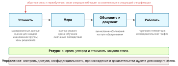
15.3.1 Specify: требования до обучения
Ловушка прокси-переменной (военная история 15.1) была ошибкой спецификации. Модель управления уходом предсказывала ровно то, что у неё просили, и сам запрос был неверным. Спецификация — этап с наибольшим рычагом влияния и наименьшей видимостью, потому что её ошибки проявляются только после того, как модель их выучила. До того как кредитный сервис попадёт в продакшен, его команда должна поэтому установить происхождение обучающих данных, определить, кто представлен, а кто отсутствует, предвидеть режимы отказа и определить средства правовой защиты для затронутых пользователей. Таблица 2 организует эти вопросы по фазам конвейера, отличая блокирующие элементы критического пути от приоритетных задач, которые могут идти дальше при документированном принятии риска. Его строки следуют конвейеру, а не шести этапам, потому что спецификация должна предвосхищать каждую фазу заранее. Строка Evaluation фиксирует, что будет проверять Measure, а строки Deployment и Monitoring — за чем будет следить Operate и как она будет реагировать.
↩︎ Постановка задачи, которая превращает запрос на модель в измеримые требования, устанавливается в Этап 1: Определение проблемы.
| Фаза | Приоритет | Ключевые вопросы | Требуемая документация |
|---|---|---|---|
| Данные | Критический путь | Откуда эти данные? Кто представлен? Кто отсутствует? Какие исторические искажения могут быть в них закодированы? | Записи о происхождении данных, анализ демографического состава, документация методологии сбора |
| Обучение | Высокий приоритет | Что оптимизирует система? Что функция потерь неявно штрафует? Как выбор архитектуры влияет на результаты? | Спецификация целевой функции, выбор регуляризации, обоснование подбора гиперпараметров |
| Оценка | Критический путь | Держится ли качество на разных группах пользователей? Какие существуют краевые случаи? Как были построены тестовые наборы? | Дезагрегированные метрики по демографическим группам, результаты тестирования краевых случаев, анализ состава тестовых наборов |
| Развёртывание | Критический путь | Кого затронет эта система? Что происходит при её отказе? Какие средства защиты есть у затронутых пользователей? | Оценка воздействия, идентификация заинтересованных сторон, процедуры отката, протоколы уведомления пользователей |
| Мониторинг | Высокий приоритет | Как обнаруживаются аномалии? Кто проверяет поведение системы? Что запускает вмешательство? | Спецификации дашбордов мониторинга, пороги оповещений, графики проверок, процедуры эскалации |
Строка Evaluation в Таблица 2 относится к спецификации, а не к тестированию, потому что называние значимых групп одновременно фиксирует бюджет данных — то самое требование к данным, которое Требования и бюджет данных вычисляет из продуктового целевого показателя. Показать, что качество держится для каждой группы, требует статистически валидного тестового набора на группу, и стоимость такого набора растёт с редкостью группы. Арифметика одинакова для любой редкой группы, поэтому прикидка 15.1 считает её для модели распознавания лиц, где каждая выборка оценки — это размеченное изображение.
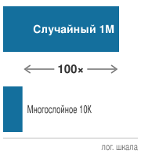
Случайной выборке нужно 100× изображений больше, чтобы достичь подгруппы в 1 percent.
Инженерный расчёт 15.1: Статистика репрезентации
Задача: Инженерной команде нужно проверить, что модель Face ID работает для группы меньшинства, составляющей 1 percent пользовательской базы. Частота ошибок группы должна быть известна с точностью до 1 percentage point при уровне доверия 95 percent. Биномиальная стандартная ошибка, стоящая за статистической ловушкой доверия из Статистические и методологические проблемы, — это корень квадратный из произведения частоты ошибок на единицу минус частота ошибок, делённого на число изображений
Случайная выборка: Чтобы в ожидании получить 10,000 images представителей группы 1 percent посредством независимой случайной выборки, команде нужно собрать и разметить:
Стратифицированная выборка: Стратифицированная выборка набирает каждую группу напрямую до её собственного целевого объёма, поэтому репрезентативный, независимо отобранный набор оценки внутри этой группы требует лишь 10,000 images — саму цель.
Системный вывод: При этих допущениях выборка из естественной популяции требует 100× общего объёма сбора по сравнению с прямым набором подгруппы — в ожидании, а не как гарантированная квота. Целевой набор всё равно должен репрезентировать подгруппу развёртывания; активный отбор трудных случаев нельзя считать несмещённой выборкой оценки без учёта его схемы отбора. Справедливость требует намеренной инженерии данных, а не неотобранного объёма.
Стоимость репрезентации, выведенная в прикидке 15.1, определяет, что должно содержаться в оценке, но даже репрезентативная оценка не может предотвратить вред при развёртывании, когда человеческий контроль недостаточен. Строка Deployment в Таблица 2 заставляет принять второе решение, которое нельзя откладывать до запуска: где люди находятся в контуре принятия решений, когда модель работает, и чему должна противостоять эта схема по своему замыслу.
Практический случай 15.2: Парадокс автоматизации (2018)
Контекст: Uber Advanced Technologies Group (ATG) тестировала беспилотные автомобили в Аризоне, полагаясь на водителя-безопасника, который должен был вмешаться, если автономная система восприятия откажет (National Transportation Safety Board 2019 г.).
Механизм: Система восприятия обнаружила пешехода, переходящего дорогу, но многократно меняла его классификацию, и каждая смена отбрасывала историю отслеживания, стоявшую за предсказанной траекторией. Автоматическое экстренное торможение было намеренно отключено, что оставило водителя-безопасника единственной оставшейся защитой.
Воздействие: Водитель-безопасник был отвлечён на личный телефон и не перехватил управление, что привело к смертельному столкновению.
Исправление: Uber дооснастила флот камерами наблюдения за водителем, снова включила автоматическое экстренное торможение и ввела дежурство двух операторов во время дорожных испытаний в автономном режиме.
Системный урок: Добавление человека-дублёра создаёт новую систему со своими режимами отказа. Высокая надёжность автоматизации может поощрять самонадеянность и снижать бдительность, поэтому эффективное резервирование требует проектирования рабочей нагрузки, мониторинга внимания и обоснования безопасности для комбинированной человеко-машинной системы.
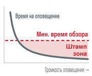
Если часы проверяющих фиксированы, растущий объём оповещений со временем оставляет слишком мало времени на каждое оповещение для реальной проверки.
Для высокорисковых приложений спецификация должна указывать, где требуется человеческий контроль. Системы с человеком в контуре (HITL) направляют неопределённые, высокоответственные или помеченные решения людям-проверяющим, а не действуют автономно; шаги одобрения врачами в ClinAIOps (Кейс-стади ClinAIOps) — один из предложенных дизайнов. Эффективный дизайн HITL должен задавать четыре требования: объём проверки (какие решения требуют человеческой проверки), пороги уверенности, запускающие эскалацию, обучение, которое получают проверяющие, и механизмы мониторинга качества работы проверяющих. HITL — не панацея. Люди-проверяющие могут штамповать автоматические решения, вносить собственные искажения или быть погребены под объёмом оповещений, поэтому граница человек–машина должна быть откалибрована под риски приложения и возможности проверяющих.
↩︎ Контур контроля врачей в ClinAIOps, в котором врач одобряет, изменяет или отклоняет каждую рекомендацию терапии, устанавливается в Контур клинического надзора.
Подобно авиационному чек-листу перед взлётом, оценка стандартизирует вопросы, на которые команда обязана ответить под давлением сроков, но сами ответы не показывают, что система безопасна. Эти улики приходят из измерения модели против групп, названных в спецификации, что превращает каждое записанное требование в проверку, которую должен пройти выпуск.
15.3.2 Measure: критерии справедливости для выпуска
Превращение групп населения, названных при спецификации, в критерии релиза — это то, что выявляет диспропорции, скрытые агрегированной метрикой. В аудите Gender Shades3, представленном в Глава 15.2.4, коммерческий классификатор лиц показывал высокую общую точность, при этом ошибаясь более чем на трети женщин с тёмной кожей (Таблица 3), что демонстрирует, как дезагрегированная оценка по демографическим категориям вскрывает сбои, которые агрегированный показатель усредняет (Buolamwini и Gebru 2018 г.). Измерение выбирает срезы, метрики и пороги, которые решают, может ли быть развёрнута такая система, как кредитный сервис, и каждый срез несёт стоимость представительности, заложенную при спецификации (расчёт «на салфетке» 15.1), поскольку малые подгруппы дают мало примеров в случайно составленный тестовый набор.
| Демографическая группа | Доля ошибок (%) | Относительно мужчин со светлой кожей |
|---|---|---|
| Мужчины со светлой кожей | 0.8% | Базовый уровень (1.0 |
| Женщины со светлой кожей | 9.8% | 12.2× |
| Мужчины с тёмной кожей | 0.7% | 0.9× |
| Женщины с тёмной кожей | 34.5% | 43.1× |
Как показывает Таблица 3, дезагрегированная оценка вскрыла то, что скрывал агрегированный показатель. Аудит измерил доли ошибок Face++, равные 0.8 percent для мужчин со светлой кожей и 34.5 percent для женщин с тёмной кожей (точности 99.2 percent и 65.5 percent). Агрегированная метрика не давала никакого указания на то, что доля ошибок для женщин с тёмной кожей была в 43.1× выше, чем для мужчин со светлой кожей.
Универсального порога, определяющего допустимую диспропорцию, не существует, но команды должны установить явные, обоснованные границы до развёртывания. Команда может принять в качестве политики релиза для конкретного приложения отношение долей ошибок ниже 1.25
Системный взгляд 15.4: Ошибка средних
Ошибка средних (Savage 2009 г.) — это ошибка суждения о проекте по его среднему случаю. Мост, «безопасный в среднем», всё же может рухнуть под тяжёлым грузовиком. МЛ-система, «точная в среднем», но ошибающаяся для конкретной демографической когорты, демонстрирует ту же проектную ошибку. Как и в случае с хвостовой задержкой (p99), проверка перед релизом должна испытывать условия, которые скрывает агрегированная метрика; дезагрегированная оценка делает сбои, специфичные для когорты, видимыми.
Выбор этих условий требует знания предметной области. Классификатор изображений сбоит иначе, чем рекомендательная система или детектор звукового ключевого слова, поэтому метрики справедливости и срезы оценки должны отражать предметную область приложения. В медицинской диагностике определения срезов определяются такими демографическими когортами, как возраст и биологический пол. В модерации контента доминируют диалект и лингвистический контекст. В финансовом андеррайтинге кредитное законодательство требует аудита юридически защищённых категорий.
Опорный пример 15.1: Проблемы справедливости в опорных примерах
«Маяки» (lighthouse) рабочих нагрузок из Архетипы рабочих нагрузок были определены ресурсом, который ограничивает каждую из них, но их риски справедливости проистекают из другого: из данных, на которых каждая учится, и из контекста, в котором каждая обслуживается. Таблица 4 сопоставляет источник данных и контекст развёртывания каждого маяка с основным риском и метрикой.
Таблица 4: Риски справедливости по маякам: Риски справедливости следуют за источником данных и контекстом развёртывания каждого маяка, а не за ограничивающим его ресурсом.
Сама по себе архитектура не определяет справедливость; каждая строка указывает на риск, специфичный для развёртывания, который следует проверять в первую очередь, а не на универсальное свойство семейства моделей или её узкого места.
| Маяк (домашний режим) | Основной риск справедливости | Ключевая метрика оценки | Пример из реального мира |
|---|---|---|---|
| ResNet-50 (ограничена вычислениями) | Смещение обучающих данных (недопредставленность групп, значимых при развёртывании) | Дезагрегированная точность по демографическим группам | Коммерческие классификаторы лиц ошибались сильнее всего на женщинах с тёмной кожей (Gender Shades проверял эти системы, а не ResNet-50) |
| GPT-2 (ограничена пропускной способностью) | Смещение корпуса (передставленность взглядов большинства в текстах веба) | Доля токсичных завершений по демографическому контексту промпта; показатель стереотипности | LLM выдают больше токсичных завершений для промптов, упоминающих группы меньшинств |
| DLRM (ограничена ёмкостью) | Усиление петлёй обратной связи (популярные элементы получают больше данных) | Доля показов рекомендаций по категории элементов и по группе поставщика или автора | Пузыри фильтров: система рекомендует похожий контент похожим пользователям, снижая обнаруживаемость нишевых авторов |
| KWS DS-CNN (ограничена энергопотреблением) | Несоответствие контексту развёртывания (обучение на чистом аудио, развёртывание в шумных реальных условиях) | Доля ложноположительных результатов по акустической среде и акценту говорящего | Голосовые ассистенты работают хуже на акцентированной речи; ключевое слово срабатывает на телевизионном аудио на некоторых языках |
Системный вывод: Оценка справедливости должна соответствовать режиму отказа каждого маяка. Модели зрения требуют стратифицированной демографической точности; большим языковым моделям (LLM) нужны зонды токсичности и стереотипов — тестовые промпты, проверяющие, не становятся ли выходы оскорбительными и не повторяют ли стереотипы о группе; рекомендательным системам нужны аудиты экспозиции; TinyML нужны испытания акустических сред. Маяк KWS сталкивается именно с этой задачей в своей глубинно-разделяющей свёрточной нейронной сети (DS-CNN). Обученная на чистом студийном аудио, она должна работать одинаково справедливо для разных акцентов, уровней фонового шума и демографических характеристик говорящих в реальных домах, поэтому её критерии релиза нуждаются в срезах по акцентам и акустическим средам, каждый из которых сопровождается собственным доверительным интервалом.
После того как приложение зафиксировало эти срезы, тестовый набор для релиза дополняет дезагрегированную оценку по срезам двумя дальнейшими режимами верификации (инвариантное тестирование, а также граничное и стресс-тестирование), которые исследуют сбои, пропускаемые статической валидационной выборкой. Оценка на основе срезов сначала устанавливает базовый уровень когорт, выявляя кредитную модель, которая достигает 95-процентной точности в целом, но падает до 78 процентов на заявителях с низкими доходами или из сельской местности, прежде чем набор проверит, не вызывают ли эти ошибки отдельные признаки или края распределения.
Инвариантное тестирование проверяет, что решения модели остаются неизменными при замене признаков, которые не должны иметь значения. Замена имён кандидатов, таких как «John» и «Jamal», в кредитной заявке не должна изменять вероятности одобрения, когда демографические признаки юридически и технически не относятся к кредитоспособности. Фреймворки поведенческого тестирования, такие как CheckList, воплощают этот принцип, организуя валидационные наборы вокруг поведенческих способностей и замен входных данных, а не вокруг единственной статической валидационной потери (M. T. Ribeiro и др. 2020 г.).
Граничное и стресс-тестирование исследуют режимы входных данных, где эмпирические валидационные данные скудны или нерепрезентативны. Граничная оценка отображает поведение на краях распределения данных (экстремальные возрасты, редкие суммы транзакций или скудные географические категории), где дисперсия предсказаний резко растёт. Стресс-тестирование распространяет эти границы на состязательные условия: повреждённые конвейеры признаков, внезапный ковариатный сдвиг и синтетические крайние случаи, разработанные для проверки запасов безопасности при деградации. Ред-тиминг со стейкхолдерами дополняет автоматизированные наборы, вводя состязательные предметные пробы от затронутых сообществ и выявляя режимы отказа, которые упускают статистические бенчмарки.
Превращение этих трёх режимов в автоматизированный релизный контроль требует четырёх связанных возможностей тестовой инфраструктуры: стратифицированной оценки, интерсекционального анализа, темпорального мониторинга и доверительных интервалов. Стратифицированная оценка автоматизирует подсчёт показателей по каждой когорте для каждого названного среза, а интерсекциональный анализ распространяет этот подсчёт на комбинации атрибутов (таких как тип кожи и гендер в аудите Gender Shades), так что составные режимы отказа, невидимые в однофакторных срезах, также оказываются выявленными. После выхода модели темпоральный мониторинг переносит те же когортные проверки в продакшен, выявляя дрейф распределения, который деградирует срезы меньшинств прежде, чем он проявится в агрегированных проверках здоровья.
Разбиение на срезы имеет статистическую цену, которую делает видимой четвёртая возможность — доверительные интервалы. Разделение тестового набора на более мелкие пересечения оставляет каждому срезу меньше примеров, поэтому контроль должен прикреплять доверительный интервал к каждой точечной оценке. Предел биномиального разрешения, который статистическая ловушка достоверности из Статистические и методологические проблемы вскрыла для агрегированного тестового набора, здесь важнее всего, где каждый срез содержит лишь долю данных оценки.
Опенсорсные наборы для оценки, такие как Fairlearn (Bird и др. 2020 г.), AI Fairness 360 (Bellamy и др. 2019 г.) и What-If Tool (Wexler и др. 2020 г.), вычисляют стратифицированные и интерсекциональные метрики, когда команда уже задала метрики, срезы и пороги оповещений. Они вычисляют любую метрику, которую запрашивает инженер; они не могут решить, какие демографические границы имеют значение, откалибровать пороги вызова для инженеров на дежурстве или выбрать юридически подходящее ограничение справедливости.
Операционная проверка перед релизом должна различать отсутствие свидетельств и свидетельство паритетности. Если у среза недостаточно размеченных валидационных данных, чтобы статистически достоверно ограничить долю ошибок, CI/CD-проверка должна сообщать о недостатке данных, а не о ложном прохождении, что запускает целенаправленное получение данных или ограничивает объём развёртывания. Каждая проверка популяции, следовательно, возвращает один из трёх результатов (прохождение, провал или недостаточно свидетельств), и только прохождение разрешает релиз.
Разобранный пример: анализ справедливости кредитного сервиса
Применение этой релизной проверки к кредитному сервису показывает, как модель с высокой общей точностью может не пройти критерии подгрупп. Среди всех рассмотренных заявителей классификатор показывает 85 percent точности на группе большинства и 82.5 percent общей точности, однако раздельная оценка когорт вскрывает большую диспропорцию. Эта сконструированная оценка предполагает, что исход погашения известен для каждого заявителя — одобренного или отклонённого. Реальный кредитор никогда не узнаёт, погасил бы отклонённый заявитель кредит, потому что этот заявитель никогда не получал кредит. Результаты двух когорт показаны рядом: когорта большинства (группа A) в Таблица 5 и когорта меньшинства (группа B) в Таблица 6.
| Одобрено (прогноз) | Отклонено (прогноз) | |
|---|---|---|
| Погасил (факт) | 4,500 (TP) | 500 (FN) |
| Дефолт (факт) | 1,000 (FP) | 4,000 (TN) |
| Одобрено (прогноз) | Отклонено (прогноз) | |
|---|---|---|
| Погасил (факт) | 600 (TP) | 400 (FN) |
| Дефолт (факт) | 200 (FP) | 800 (TN) |
Каждый показатель в последующих расчётах может быть восстановлен из ячеек «одобрено/отклонено» и «погасил/дефолт» этих двух матриц. Три стандартных критерия равноправного обращения охватывают различные операционные цели, и обе матрицы кредитного сервиса нарушают все три.
Демографический паритет (Dwork и др. 2012 г.) требует равных долей положительных решений по группам независимо от исходной квалификации (
Равные возможности требуют равных долей истинно положительных решений (TPR) среди квалифицированных заявителей (
Выравненные шансы ужесточают ограничение, требуя паритета как по доле истинно положительных, так и по доле ложноположительных решений (
Обе группы в этом сценарии имеют одинаковую базовую долю (5,000 из 10,000 и 1,000 из 2,000 заявителей вернули кредит), и эта общая базовая доля важна из-за четвёртого критерия — калибровки внутри групп, — который оценивает скоринговые оценки модели, а не её одобрения. Оценка откалибрована, когда она означает то, что означает: среди заявителей, получивших оценку 0.8, восемь из десяти вернут кредит; проверка оценивает эту вероятностную калибровку на всём тестовом множестве (Метрики и пороги оценки). Калибровка внутри групп применяет ту же проверку к каждой группе отдельно. Среди заявителей группы
В реальных популяциях базовые доли часто различаются, и при неравных базовых долях и несовершенном предсказании критерии калибровочного типа и баланс долей ошибок могут конфликтовать (Chouldechova 2017 г.; Kleinberg и др. 2017 г.). Когда одна группа имеет более высокую базовую долю возвратов, чем другая, а оценка откалибрована внутри обеих групп, бо́льшая доля группы с высокой долей должна получать высокие оценки выше порога одобрения. Поскольку предсказание несовершенно, высокая откалиброванная оценка всё же несёт некоторый риск дефолта, поэтому доля допустивших дефолт в этой группе также чаще оказывается выше порога. Один и тот же порог, следовательно, одобряет бо́льшую долю допустивших дефолт в этой группе (более высокая доля ложноположительных) и отказывает меньшей доле вернувших кредит (более низкая доля ложноотрицательных). Оценка, откалиброванная внутри каждой группы, в общем случае назначает группам разные доли ложноположительных или ложноотрицательных решений, и операционная гарантия должна выбираться и обосновываться для конкретного применения, а не выводиться из агрегированной точности или калибровки.
Неравные базовые доли также разводят демографический паритет и критерии долей ошибок. Доля одобрений группы объединяет её долю истинно положительных решений на подмножестве вернувших кредит с долей ложноположительных на подмножестве допустивших дефолт. Две группы с равными долями ошибок, но разными долями возвратов, следовательно, получают разные доли одобрений — если только модель не одобряет вернувших и не вернувших кредит с одинаковой долей и потому не различает их. При неравных базовых долях модель с любой предсказательной силой, удовлетворяющая выравненным шансам, нарушает демографический паритет, поэтому никакая такая модель не может удовлетворить всем этим критериям одновременно.
Эти метрики расходятся, потому что кодируют разные политические решения о том, какие доли ошибок важнее. В данном сценарии модель отказывает квалифицированным заявителям группы B с гораздо большей долей (40 percent доля ложноотрицательных против 10 percent), сохраняя схожие доли ложноположительных. Эти матницы ошибок устанавливают операционное расхождение, но не то, возникло ли оно из порогов классификации, смещения разметки, пропущенных признаков, перекоса выборки или исторической дискриминации. Система оценки рисков COMPAS7 демонстрирует то же расхождение в развёрнутой системе, где группы имели неравные базовые доли.
Практический случай 15.3: Аудит алгоритма рецидивизма COMPAS (2016)
Контекст: COMPAS — инструмент оценки рисков, используемый в судах США для предсказания повторных правонарушений при решениях о залоге и приговорах (Angwin и др. 2016 г.).
Механизм: Аудированные оценки сочетали приблизительную калибровку по расовым группам (данная оценка соответствовала примерно одинаковой наблюдаемой доле повторных правонарушений в каждой группе) с неравными долями ошибок. Эти наблюдения выявляют политический выбор допустимых ошибок; они не устанавливают, какую целевую функцию использовал исходный оптимизатор.
Влияние: Темнокожие подсудимые, не совершившие повторного правонарушения, ошибочно помечались как высокорисковые почти вдвое чаще белых подсудимых (44,9 процента против 23,5 процента), тогда как белые рецидивисты гораздо чаще ошибочно помечались как низкорисковые.
Реакция: Аудит показал, почему одна лишь калибровка не могла определить, приемлемо ли распределение ошибок. Любой юрисдикции, использующей такие оценки, нужна явная политика о том, какие критерии справедливости важны, независимая валидация по группам и проверка того, как оценка входит в процесс принятия решений.
Системный урок: Оценки были приблизительно откалиброваны по расе, но нарушали выравненные шансы — критерий, требующий равных долей истинно и ложноположительных решений между группами. Матрицы ошибок кредитного сервиса показывают сторону конфликта, связанную с долями ошибок, а COMPAS добавляет сторону калибровки — именно поэтому команда должна явно выбирать, какое ограничение справедливости является определяющим.
Там, где сбор и использование защищаемых признаков законны и обоснованы, производственные системы могут автоматизировать эти вычисления и запускать проверку, когда расхождения превышают предопределённые пороги. Список 1 явно обрабатывает случай ошибки, сообщая о неопределённых групповых долях как о недостаточных данных, а не сравнивая их с порогом. Эти проверки знаменателей устанавливают лишь арифметическую корректность. Производственная проверка выпуска требует также минимального количества размеченных примеров и проверок неопределённости для каждого значимого среза; доля, вычисленная по одному наблюдению, — недостаточное доказательство.
def compute_fairness_metrics(confusion_matrix):
tp, fp, tn, fn = (
confusion_matrix[k] for k in ["TP", "FP", "TN", "FN"]
)
total = tp + fp + tn + fn
return {
# Demographic parity
"approval_rate": (tp + fp) / total if total else None,
# Equal opportunity
"tpr": tp / (tp + fn) if (tp + fn) else None,
# Equalized odds (with TPR)
"fpr": fp / (fp + tn) if (fp + tn) else None,
}
# Compare groups and flag disparities exceeding threshold
for metric in ["approval_rate", "tpr", "fpr"]:
if metrics_a[metric] is None or metrics_b[metric] is None:
report_insufficient_data(metric)
continue
disparity = abs(metrics_a[metric] - metrics_b[metric])
# e.g., 0.05 for high-stakes applications
if disparity > FAIRNESS_THRESHOLD:
trigger_alert(metric, disparity)Автоматический мониторинг отслеживает метрики справедливости многократно и в масштабах, недоступных ручному аудиту, и поднимает тревогу, когда достаточный объём размеченных данных выявляет расхождение. Доступность меток и время, необходимое для накопления наблюдений, ограничивают скорость обнаружения. Расхождение TPR, равное 30 percentage-point, значительно превышает порог выпуска 5 percentage-point данного сценария, что указывает на необходимость вмешательства в целях справедливости до развёртывания модели. Таблица 7 суммирует вычисленные метрики и полученные расхождения по обеим когортам.
| Метрика | Группа A | Группа B | Расхождение |
|---|---|---|---|
| Доля одобрений | 55% | 40% | 15 pp |
| Доля истинно положительных | 90% | 60% | 30 pp |
| Доля ложноположительных | 20% | 20% | 0 pp |
Когда один порог классификации применяется к группам с по-разному распределёнными оценками, агрегированная производительность может маскировать серьёзные расхождения между подгруппами (Barocas и Selbst 2016 г.). Рисунок 2 показывает эффект на отдельной toy-популяции из шестнадцати заявителей, чьи подгруппы A и B не совпадают с группами A и B кредитного сервиса. Каждый заявитель занимает позицию в строке своей подгруппы, граница решения одобряет каждого заявителя слева от себя, а процент на каждой пунктирной границе — это общая точность, которую она достигает, а не значение оценки. Переключение между двумя границами-кандидатами поднимает общую точность с 75 процентов до 81.25 процента, достигая идеального разделения в подгруппе A, но одновременно утраивает число ошибок классификации в подгруппе B. Поскольку оценки двух подгрупп распределены по-разному, одна общая граница не может находиться в оптимальной точке для обеих. Перемещение, повышающее глобальную метрику, делает это ценой исходов подгруппы B. Одна лишь агрегированная точность не может определить, справедливы ли эти исходы для какой-либо из когорт.
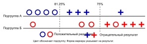
Устранение этих расхождений означает вмешательство до, во время или после обучения, и каждый этап налагает собственные системные компромиссы. Предобработка посредством перевзвешивания примеров фиксирует вес для каждого обучающего примера до начала обучения, придавая больший вес сочетаниям группы и исхода, недопредставленным в данных. Функция потерь при обучении затем масштабирует штраф для каждого примера группы B на его вес, усиливая градиентный сигнал для недопредставленных когорт без отбрасывания данных.8 Компромисс состоит в том, что перевзвешивание может снизить точность на срезах большинства.
Внутрицикловая обработка посредством состязательного устранения смещения превращает цикл обучения в минимаксную игру между двумя «головами», разделяющими один энкодер. Основная модель (энкодер и предиктор) преобразует входные признаки
Здесь
Постобработка посредством настройки порогов оставляет обученную модель неизменной и задаёт отдельную границу решения для каждой группы, снижая порог одобрения для группы B, чтобы выровнять TPR. Операционный компромисс — рост доли ложноположительных решений внутри этой когорты: одобряются заявители, которые впоследствии могут допустить дефолт. Этот рычаг также юридически ограничен. В США групповые пороги запрещены при отборе на работу и ограничены в кредитовании, поэтому такое вмешательство часто существует лишь в принципе, а команды переходят к перевзвешиванию, исправлению признаков и меток или изменению целевой функции.
Выбор среди этих вмешательств требует согласованности заинтересованных сторон относительно допустимых компромиссов для конкретного домена развёртывания. Какое бы вмешательство ни было выбрано, его компромисс должен быть выражен числом, о котором стороны могут спорить. Число в каждом случае происходит из одного и того же измерения. Команда применяет смягчение, оценивает полученную модель на тех же срезах, что и исходную, и сообщает об устранённом расхождении против пожертвованной точности или денежной полезности, добавляя дополнительные часы обучения, когда смягчение требует переобучения модели. Прикидочный расчёт 15.2 выполняет такой учёт для настройки порогов. Перевзвешивание и состязательное устранение смещения оцениваются тем же способом, но их цена зависит от модели и данных, поэтому каждую необходимо измерять для конкретного развёртывания, а не цитировать из общей цифры.
Контрольная точка 15.2: Критерии справедливости
Справедливость — не одна метрика; это ограниченное проектное решение.
Количественная оценка компромисса между справедливостью и точностью
Каждая мера смягчения в кредитном сервисе — будь то переприсваивание весов выборки, состязательное устранение смещения или корректировка порога — уменьшает демографическое расхождение, перемещая модель в новую рабочую точку, и заинтересованным сторонам нужно видеть, какую предсказательную полезность теряет этот сдвиг. Вдоль фронта Парето «справедливость–точность» (принцип «Фронт Парето») ни одна из целей не может улучшиться без ухудшения другой (Рисунок 3). Когда расхождение измеряется разрывом демографического паритета из Глава 15.3.2.1, горизонтальная ось располагает меньшие разрывы правее. На рисунке обозначены три гипотетические модели-кандидата A, B и C; эти буквы не связаны с группами A и B кредитного сервиса. Кандидат A имеет наибольшую точность, у кандидата B меньше разрыв паритета, а кандидат C имеет нулевой разрыв при меньшей точности. Отношение, напечатанное рядом с кандидатом B, показывает, насколько его разрыв паритета меньше, чем у кандидата A; это отношение сравнивает только один разрыв, но не точность.
Реальное развёртывание размещает свои конфигурации-кандидаты на плоскости, подобной плоскости из Рисунок 3, назначая цену каждому типу ошибки в единицах предметной области. Кредитный сервис из Глава 15.3.2.1 делает полученный штраф конкретным, потому что каждый исход кредитования имеет явную долларовую стоимость: маржа по возвращённому кредиту с одной стороны и убыток по дефолту — с другой. Его вмешательство закрывает разрыв равенства возможностей (TPR), а не разрыв демографического паритета, который изображён на рисунке, поэтому его результат лежит в другой плоскости — разрыв TPR против полезности в долларах. Метод тот же: назначить цену тому, что конфигурация отдаёт, по сравнению с расхождением, которое она устраняет.
Инженерный расчёт 15.2: Цена справедливости
Задача: Заинтересованные стороны требуют устранения разрыва истинной доли положительных предсказаний (TPR) в размере 30 percentage-point в кредитном сервисе. Какова «Цена справедливости» в исходах кредитования?
Физика: Значения TPR можно выровнять, скорректировав порог классификации
- Исходное состояние: Группа A (
90 percent), Группа B ( 60 percent, 20 percent). - Вмешательство: Понизить
до тех пор, пока 90 percent. (Законодательство США о кредитовании ограничивает групповые пороговые значения, как отмечено в обсуждении мер смягчения, поэтому расчёт количественно оценивает компромисс, а не применяемое вмешательство.) - Цена: Понижение порога увеличивает ложноположительные срабатывания (одобрение заявителей, которые затем допускают дефолт).
Математика:
- При предполагаемом в сценарии отклике порога закрытие разрыва TPR в размере 30 percentage-point даёт увеличение ложноположительных срабатываний на 20 percentage-point для находящейся в невыгодном положении группы.
- Если 50 percent заявителей Группы B вернули бы кредит, возвращённый кредит приносит маржу в $1,500, а дефолт теряет $3,000, то нужно учесть обе стороны вмешательства:
- Базовая полезность Группы B вычисляет исходный ожидаемый выигрыш:
на заявителя. - Оценка вмешательства требует учёта обоих маржинальных членов:
. - Добавленная стоимость истинноположительных срабатываний составляет $225 на заявителя Группы B, тогда как добавленная стоимость ложноположительных срабатываний — $300, что даёт чистый убыток $75.
- Деление этого чистого убытка $75 на базовую полезность $150 даёт внутригрупповую потерю полезности 50 percent. При доле Группы B в 17 percent заявителей средняя по совокупности потеря составляет $12.50 на заявителя; вычисление агрегированного процента также требует базовой полезности другой группы.
- Базовая полезность Группы B вычисляет исходный ожидаемый выигрыш:
Системный вывод: «Цена справедливости» — так в литературе о справедливости называют полезность, которую система отдаёт ради выполнения ограничения справедливости; в этом сценарии это внутригрупповая потеря полезности 50 percent. Потеря не автоматична: когда разрыв TPR отражает плохо откалиброванный порог, его закрытие может повысить чистую полезность. Она возникает, когда базовый порог близок к оптимуму полезности, а маржинальные одобрения смещены в сторону дефолта. Инженерные команды обязаны предоставлять заинтересованным сторонам и фронт Парето, и операциональные допущения, на которых он построен.
Расчёт даёт заинтересованным сторонам способ выбрать и защитить точку на фронте «справедливость–точность», но метрики релиза на уровне когорт остаются внутри инженерной команды. После выпуска модели ни заявитель, которому отказано, ни команда, унаследовавшая контрольную точку (checkpoint) ниже по конвейеру, не могут действовать на основе когортного среднего; обоим нужны индивидуальные решения системы и её рабочие границы, сделанные наглядными.
15.3.3 Объяснение и документирование: решения и модели становятся наглядными
Когда кредитный сервис отклоняет заёмщика с голой вероятностной оценкой 0.41, заявитель не может сказать, пришёл ли отказ из-за высокого соотношения долг/доход или из-за повреждённого поля в кредитном бюро. Через полгода другая команда повторно использует тот же классификатор для проверки арендаторов жилья, не зная, на каких совокупностях он тестировался, и организация получает вторую ошибку уже на уровне модели. Объяснение и документирование отвечают на это единое требование наглядности на двух временных масштабах. Объяснение делает одно решение понятным, в момент его принятия, для человека, которого оно затрагивает. Документирование делает модель понятной на протяжении всего её жизненного цикла для инженеров, аудиторов и унаследовавших её команд ниже по конвейеру: на чём она обучалась, где была валидирована и для чего её нельзя использовать. Оба существуют по одной и той же системной причине: гарантия, которую никто вне команды не может проверить, не может быть оспорена, проверена аудитом или безопасно использована повторно.
Требования к объяснимости
На временном масштабе принятия решений заявитель, которому отказано с той самой оценкой 0.41, может по применимому законодательству иметь право на конкретные факторы неблагоприятного решения, указывающие, какие входные данные привели к отказу и что могло бы его изменить. Объяснимость10 — это способность, которая разъясняет, как входные признаки повлияли на конкретное предсказание, обеспечивая человеческий контроль над автоматизированными решениями, поддержку отладки инцидентов и выполнение применимых требований к прозрачности решений.
Требуемый уровень объяснимости варьируется в зависимости от контекста применения и регуляторной среды (Таблица 8), и это требование ограничивает архитектуру, а не только то, что логируется. Кредитное андеррайтинг может требовать раскрытия заявителю основных причин, а медицинская диагностика требует поддержки клинического обзора. Обнаружение мошенничества вместо этого должно уравновешивать обязанности по уведомлению с риском состязательной игры. Объяснение, написанное для заявителя, должно соответствовать более высокой планке, чем значения SHAP, которые инженеры используют для локализации ошибочных предсказаний при отладке инцидентов. Следовательно, требование объяснимости определяет ещё до обучения, какие семейства моделей допустимы и какие дополнительные вычисления должен нести путь обслуживания.
↩︎ Значения SHAP, оценивающие, насколько каждый входной признак повлиял на одно предсказание, закреплены как инструмент отладки в Атрибуция признаков для отладки.
| Область применения | Уровень объяснимости | Типичные требования |
|---|---|---|
| Кредитные решения | Конкретные причины по охватываемым действиям | Основные причины могут подлежать раскрытию заявителю |
| Медицинская диагностика | Поддержка решений | Поддержка клинического обзора и применимого документирования |
| Модерация контента | Зависит от контекста | Поддержка уведомлений или апелляций там, где они требуются |
| Рекомендации | Зависит от контекста | Обеспечение прозрачности, соразмерной использованию и действующим правилам |
| Обнаружение мошенничества | Контролируемое раскрытие | Баланс применимых обязанностей по уведомлению с риском состязательной игры |
Каким бы ни было требование, модели-кандидаты лежат на континууме от внутренней интерпретируемости до апостериорных объяснений (Рисунок 4). Слева малые деревья и разреженные линейные или логистические модели с осмысленными признаками могут раскрыть логику решений для человеческой проверки. Большие деревья или непрозрачные сконструированные признаки могут свести это преимущество на нет. Справа высокоёмкие представления, такие как случайные леса (ансамбли многих решающих деревьев), глубокие нейронные сети и свёрточные нейронные сети (CNN) или трансформеры, часто нуждаются в дополнительных методах объяснения. Два распространённых — LIME, которая подгоняет простую суррогатную модель вокруг одного предсказания, и SHAP, которая назначает каждому входному признаку долю этого предсказания. Оба требуют проверки точности (fidelity) — тестов того, что объяснение согласуется с тем, что модель действительно вычисляет. Карты внимания сами по себе не устанавливают достоверных объяснений. Континуум упорядочивает возможные подходы, но не даёт категорической гарантии ни для одного семейства моделей.
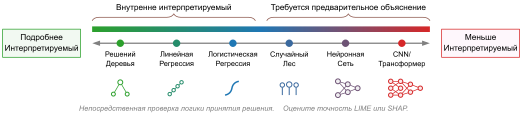
Выбор стратегии объяснимости вдоль этого спектра требует балансирования точности объяснения, задержки обслуживания и архитектурной гибкости. Пост-хок методы объяснения, такие как SHAP и LIME, формируют оценки важности признаков для отдельных предсказаний, не изменяя внутреннее устройство модели.11 Не зависящие от модели объяснители оценивают возмущённые входы или выборки подмножеств признаков, внося дополнительные вычисления и приближения. Модель-специфичные алгоритмы SHAP могут вместо этого использовать внутреннюю структуру; именно метод объяснения и место его исполнения определяют задержку и точность.
Путь объяснения имеет измеримую стоимость обслуживания. Для 20 входных признаков кредитного сервиса точная шаплеевская атрибуция оценивает модель на каждом подмножестве признаков: 1,048,576 вычислений, чтобы объяснить решение, на принятие которого потребовался один вычислительный проход. Сэмплирующие объяснители ограничивают эту работу фиксированным числом подмножеств, но даже 1,000 выборок умножают вычисления каждого объясняемого решения на размер выборки. Поэтому именно путь объяснения, а не модель, может задавать бюджет ускорителей сервиса и его хвостовую задержку.
Для отклонённой кредитной заявки объяснение LIME надёжно только тогда, когда его локальный суррогат согласуется с моделью в окрестности заявителя и остаётся устойчивым при повторной выборке. Точность (fidelity) измеряется как ошибка предсказания суррогата относительно модели на свежем наборе правдоподобных соседних заявок, а устойчивость — повторением подгонки при разных seed сэмплирования, чтобы проверить, сохраняются ли ведущие признаки и их знаки. Допустимые ошибка и устойчивость должны быть заданы до проверки, и даже точный суррогат описывает поведение модели, не давая причинного объяснения и юридически достаточного основания.
Отказ от этой атрибуции на каждый запрос переносит выбор в левую часть спектра интерпретируемости. Там внутренне интерпретируемые модели обеспечивают прозрачность структурными ограничениями: неглубокими деревьями решений, разреженными линейными моделями или обобщёнными аддитивными моделями, которые суммируют по одной проверяемой функции на признак. Они уступают в выразительной мощности на многомерных входах, поэтому лучше всего подходят, когда набор признаков остаётся компактным и осмысленным. Объяснения на основе концепций идут противоположным путём: помеченными примерами они проверяют, усвоила ли обученная сеть человеческую концепцию, например полосатую текстуру.
Пример 15.1: Больничный шорткат
Сценарий: модели компьютерного зрения для выявления пневмонии, обученные в Mount Sinai, достигли высокой внутренней точности, но провалились на внешних больничных наборах данных (Zech и др. 2018 г.).
Диагноз: нейронная сеть усвоила шорткат-признаки (артефакты сканеров, специфичные для больницы, и текстовые метки), а не действительную биологическую патологию лёгких.
Системный урок: модель может усвоить любой признак, который легче всего предсказывает метку, включая не связанный с болезнью. Внешняя валидация необходима для обнаружения шорткат-обучения. Карты значимости (saliency maps) — попиксельные тепловые карты того, насколько сильно каждая область входа влияет на выход, — могут дать вспомогательные доказательства, но не устанавливают, что модель усвоила предполагаемый механизм.
Больничный шорткат показывает, почему интерпретируемость — системное требование, а не косметика представления. Командам нужна достаточная прозрачность, чтобы обнаружить и изолировать ложные корреляции до развёртывания. Выбор между этими парадигмами зависит от требований приложения к подотчётности. Спектр не подразумевает, что «простое всегда лучше», потому что высокоинтерпретируемая модель, дающая неточные предсказания, тоже может причинить вред. Кредитное законодательство требует конкретных причин по охватываемым решениям, но не предписывает конкретную архитектуру модели, а другие приложения сталкиваются с иными обязанностями по прозрачности, безопасности или оспариваемости. Глава 15.5.3 сопоставляет эти обязанности с требуемыми ими возможностями. Однако объяснение покрывает одно решение за раз. Предпосылки каждого решения, принимаемого моделью, нуждаются в собственной долговечной записи — той, которая путешествует вместе с артефактом.
Стандарты документации моделей
Когда команда получает продакшен-модель без такой долговечной записи, артефакт может показывать 94 процента точности на отведённом тестовом наборе, оставляя незадокументированными происхождение тестового набора, состав обучающих данных и оценённые демографические или экологические срезы. Обновление или повторное развёртывание модели тогда рискует неизмеренными регрессиями при сдвиге распределения. Model cards (карточки моделей) предоставляют стандартизированную документацию для обученных моделей12 (Mitchell и др. 2019 г.). По аналогии с даташитами компонентов в компьютерной инженерии карточки моделей документируют операционные границы, условия оценки и предполагаемые режимы работы вместе с артефактом модели.
Полная карточка модели покрывает семь ключевых разделов, которые вместе определяют безопасный операционный диапазон модели. Она начинается со сведений о модели (архитектура, процедуры обучения и гиперпараметры), обеспечивающих воспроизводимость и аудит. Она указывает предполагаемое использование вместе с явными выходящими за рамки приложениями, предотвращая расползание области применения, когда модели, обученные для индексации пользовательских фотографий, перепрофилируются для высокорисковой слежки. Затем карточка документирует, какие факторы (демографические группы, условия окружающей среды или вариации сенсоров) влияют на производительность, направляя и разбиение на срезы при оценке, и продакшен-мониторинг.
Оставшиеся разделы количественно описывают и ограничивают эмпирическое поведение. Метрики производительности должны сообщать дезагрегированные результаты по операционным факторам, выявленным в Глава 15.3.2, потому что агрегированная точность скрывает систематические различия подгрупп. Документирование обучающих и оценочных наборов данных изолирует потенциальные выборочные смещения и определяет распределение, на котором выполняются отчётные метрики. Наконец, этические соображения, оговорки и рекомендации делают компромиссы развёртывания явными, фиксируя известные режимы отказа, немоделируемые краевые случаи и операционные меры смягчения.
Применительно к MobileNetV2 эта схема превращает категории в конкретные ограничения развёртывания. Таблица 9 заполняет пять из семи разделов для сервиса классификации на периферийном устройстве, а её записи точности повторяют иллюстративные значения FP32 и INT8 из валидации сжатия в Валидация сжатия: граница «эффективность — качество».
| Раздел | Содержимое |
|---|---|
| Model Details | Архитектура MobileNetV2 с 3.5M параметрами, обучена на ImageNet с использованием depthwise separable свёрток. Квантована в INT8 для периферийного развёртывания. |
| Intended Use | Классификация изображений в реальном времени на мобильных устройствах с требованием задержки менее 50 ms. Подходит для пользовательских приложений, включая организацию фотографий и функции доступности. |
| Factors | Производительность зависит от качества изображения (размытие, освещение), размера объекта в кадре и категорий вне распределения ImageNet. |
| Metrics | 70.9% top-1 точность на валидационном наборе ImageNet после квантизации INT8 (полная точность: 71.8%). Точность различается по категориям: 85% на обычных объектах, 45% на тонких различениях. |
| Ethical Considerations | Обучающие данные отражают смещения ImageNet в географическом и демографическом представительстве. Не валидирована для высокорисковых приложений (медицинская диагностика, досмотр безопасности). Производительность может снижаться на изображениях из недостаточно представленных регионов. |
Datasheets for datasets предоставляют дополняющий документ для уровня данных (Gebru и др. 2021 г.), фиксируя происхождение, методологию сбора, фильтры курирования и демографический состав. В терминах D·A·M карточка модели специфицирует алгоритмическую и машинную границы (включая точность квантизации и бюджеты задержки инференса), а даташит — данные, которые их породили. Вместе они описывают диапазон, в котором модель была валидирована, и сохраняют доказательства, которые дало измерение. Команда, предлагающая новое применение, например скрининг арендаторов, с которого начался этот раздел, может затем сравнить свою популяцию с этим диапазоном и обнаружить, что применение выходит за его пределы. Однако оба документа описывают систему на момент выпуска. Эксплуатация — это этап, который сохраняет это описание верным, когда модель встречается с живым трафиком.
↩︎ Даташиты, как часть столпа управления (governance) конвейера данных, вводятся в Четыре основополагающих столпа.
15.3.4 Эксплуатация: справедливость как устойчивость контура
Кредитная модель, прошедшая порог справедливости в 5 процентных пунктов и выпущенная с полной модельной картой, может нарушить этот порог через шесть кварталов без единого изменения в коде, потому что каждое квартальное дообучение учится только на тех заявителях, которых одобрила предыдущая модель. Проверки при выпуске и документация удостоверяют систему в один момент времени — до того, как реальный трафик и дообучение по замкнутому контуру изменят её поведение.
Поэтому ответственная эксплуатация сервиса требует, чтобы уже используемый в операциях порядок реагирования на инциденты (обнаружение, оценка, купирование, коммуникация и устранение) рассматривал нарушение справедливости или регрессию на отдельном сегменте как самостоятельный инцидент. Операционная команда также должна проверить каждый контроль до запуска, включая пороги оповещений, протестированные на историческом воспроизведении, отработанный под нагрузкой путь отката и график дежурств с задокументированной эскалацией, — так, чтобы мониторинг и реагирование существовали до того, как модель получит продакшн-трафик.
↩︎ Последовательность реагирования на ML-инциденты — классификация серьёзности, обнаружение, оценка воздействия, купирование и анализ первопричины — определена в Реагирование на инциденты в ML-системах.
Этот дрейф за шесть кварталов начинается с самого решения об одобрении, потому что именно оно определяет, какие исходы вообще могут быть наблюдаемы. Рисунок 5 разделяет обычный поток данных о возвратах кредитов и отдельную заявленную интервенцию, которая получает дополнительные наблюдения.
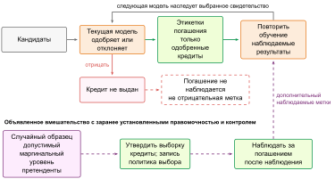
Исход возврата по отказанному кредиту является цензурированным: само решение препятствует тому, чтобы этот исход когда-либо был наблюдаем. Отсутствие метки возврата нельзя трактовать ни как дефолт, ни как успешный возврат. Аудит существующих записей не может показать, как повёл бы себя кредит, который так и не был выдан. Получение свидетельств вне обычного потока одобрений требует явно обоснованной стратегии наблюдения с зафиксированной политикой отбора и последующим контролем; оценка диспропорций в популяции по-прежнему зависит от того, что эти свидетельства позволяют установить.
Мониторинг работоспособности сервиса выявляет сбои и таймауты, но значительная часть технического долга, накапливаемого ML-системами (Технический долг), — например скрытые зависимости данных и петли обратной связи — ничего не «роняет» и проявляется лишь как тихая деградация (Sculley и др. 2015 г.). Поэтому в поверхность продакшн-телеметрии нужно добавить два сигнала ответственности рядом с дрейфом входных данных и задержанными исходами. Паритет по подгруппам становится полноценным первоклассным мониторингом: отслеживание долей ложноположительных и ложноотрицательных результатов по когортам во времени с планами реагирования, учитывающими задержку меток. Жалобы пользователей, оспоренные решения и апелляции поступают на ту же поверхность, потому что агрегирование по миллионам запросов сглаживает редкие вредные эффекты, о которых первыми сообщают пострадавшие люди.
Мониторинг паритета наиболее важен, когда решения системы формируют её собственные будущие обучающие данные. Именно так цензурирование проявляется в кредитном сервисе. Квалифицированный заявитель, которому модель отказала, не оставляет записи о возврате, поэтому эта ошибка никогда не исправляется, а группа, которой модель отказывает чаще, вносит в следующий обучающий набор меньше возвращённых кредитов. Следующая модель видит меньше свидетельств того, что такие заявители возвращают кредиты, — и сегодняшняя диспропорция становится входом очередного дообучения. В простейшей модели этого переноса диспропорция каждого интервала пропорциональна диспропорции предыдущего: чем шире разрыв, тем больше квалифицированных заявителей получают отказ и тем больше свидетельств изымается из следующего обучающего набора.
Модель петли смещения (принцип «Модель обратной связи по смещению») утверждает, что перенос — это диспропорция, эволюционирующая как
↩︎ Архитектуры продакшн-мониторинга для устойчивости производительности и дрейфа распределений определены в Мониторинг в промышленной эксплуатации.
Инженерный расчёт 15.3: Справедливость как устойчивость контура
Постановка задачи: После смягчения кредитный сервис из Глава 15.3.2.1 запускается с остаточным разрывом TPR в 3 percentage points, внутри порога выпуска 5 percentage-point данного сценария. Отказанные заявители не генерируют меток возврата в обычном обучающем потоке, поэтому каждое квартальное дообучение учится на совокупности, отобранной предыдущей моделью. Для этой иллюстрации независимое аудиторское наблюдение собирает данные о возвратах по обеим группам, включая заявителей, которых отклонила продакшн-политика; без таких свидетельств или обоснованной коррекции на недостающие исходы разрыв TPR по всем квалифицированным заявителям не удалось бы измерить напрямую. Следующий квартальный аудит измеряет разрыв в 3.3 percentage points. Если локально оцененный коэффициент роста сохранится, когда разрыв нарушит порог выпуска?
Математика:
- Оценка коэффициента обратной связи:
1.10 за квартал. - Время до нарушения по оценённой модели: Прогнозируемый разрыв
превышает порог выпуска, когда . Модель прогнозирует нарушение через 6 quarterly retraining cycles, когда разрыв достигает 5.3 percentage points. - Без смягчения: Тот же коэффициент вырос бы с исходного разрыва 30 percentage-point до 43.9 percentage points в течение 4 cycles — года дообучений.
- Изменение контура: Если команда одобрит небольшую рандомизированную выборку пограничных заявителей и понаблюдает их возвраты, контур снова увидит исходы, которые ранее были цензурированы, и дообучение станет учиться на наблюдаемых исходах заявителей, которых старая политика отклоняла, вместо того чтобы закреплять её ошибки. Пусть после переоценки коэффициент упал до 0.90; тогда тот же разрыв на запуске за то же число циклов затухает до 1.6 percentage points.
Системный вывод: Порог выпуска, выполненный на запуске, — это утверждение о
Ранжирующий сервис DLRM работает по тому же контуру, но с куда более жёстким цензурированием. При 10 million ежедневных пользователях, каждому из которых показывается 20 ранжированных позиций из каталога в 1 million позиций, сервис логирует 200 million показов в день. Однако обратная связь каждого пользователя покрывает лишь 0.002 percent каталога, и каждую позицию в нём выбрала предыдущая модель. Позиции и авторы, которые ранжировщик перестал показывать, не получают кликов, а значит, и никаких свидетельств того, что их стоило показывать, — это форма экспозиционной петли смещения.
Средство против такого экспозиционного цензурирования зеркально рандомизированным одобрениям кредитного сервиса. Резервирование 1 percent позиций под рандомизированное исследование даёт 2 million показов в день, не отобранных предыдущей моделью, — выборку, по которой можно оценить долю показов и вовлечённость каждой группы авторов относительно несмещённой базовой линии. Затраты измеримы, как и у любого другого изменения обслуживания, потому что эта доля позиций обслуживается с меньшей ожидаемой вовлечённостью, — и это цена сбора свидетельств, позволяющих удерживать коэффициент обратной связи ниже единицы.
Ни квартальные аудиты паритета кредитного сервиса, ни исследовательская выборка DLRM-сервиса не защищают пользователей, если полученные сигналы лежат на пассивном дашборде. Оба контура остаются ограниченными только тогда, когда запланированные периодичности аудита, чёткая принадлежность дежурств и явные пороги эскалации напрямую связывают наблюдаемый рост
Контрольная точка 15.3: Этичное развёртывание
Развёртывание — это место, где меры защиты должны стать операционными.
Страховочная сетка
План мониторинга
Равнодоступное качество по демографическим когортам — лишь одно измерение ответственной инженерии. Ресурсный этап жизненного цикла охватывает другое: каждый запуск обучения, каждый запрос инференса и каждый мониторинговый конвейер потребляют электроэнергию, которая превращается в выбросы углерода и операционные расходы. Конвейер может удовлетворять демографическому паритету, потребляя на порядки больше вычислений, чем того требует задача, — поэтому ответственная инженерия должна управлять и тем, кому система служит, и физическими ресурсами, расходуемыми на это обслуживание.
15.4 Экологическая и стоимостная осознанность
В 2019 году исследователи оценили, что обучение в масштабах разработки и поиск архитектуры для большой модели обработки естественного языка (NLP) могут привести к выбросам углерода, сопоставимым с выбросами пяти автомобилей за весь срок их службы (Strubell и др. 2019 г.). Последующий анализ показал, что наиболее цитируемая оценка для поиска архитектуры сильно зависела от предположений о прокси-задаче, оборудовании, энергоэффективности дата-центра и углеродоёмкости электросети (Patterson и др. 2021 г.). Это уточнение сужает оценку, но не отменяет самой сути. Тренировочные прогоны потребляют мегаватт-часы электроэнергии, инференс в масштабе умножает неэффективность отдельного запроса на измеримое воздействие на окружающую среду, а ресурсоёмкие модели отсекают организации, не располагающие крупными вычислительными бюджетами. Поэтому техники повышения эффективности одновременно служат инструментами ответственной инженерии, связывая вычислительную эффективность с экологической устойчивостью и экономической доступностью. Для сервиса ранжирования DLRM объём запросов делает обслуживание, а не обучение, статьёй, доминирующей и в счёте, и в выбросах.
15.4.1 Эффективность как ответственность
Обучение одной большой языковой модели требует тысяч GPU-часов и энергии, измеряемой мегаватт-часами. «Горький урок» предсказывает, что этот занимаемый объём памяти и ресурсов будет продолжать расти, поскольку выигрывают те методы, которые преобразуют дополнительные вычисления в способность. Однако значительная часть этих расходов не присуща самой задаче обучения, а представляет собой случайную сложность (accidental complexity): обучение с нуля там, где хватило бы дообучения (fine-tuning), развёртывание архитектур большего размера, чем требует задача, и перебор гиперпараметров, исследующий избыточные конфигурации. Вычислительная стоимость зависит как от «физики модели», так и от инженерных решений. Green AI рассматривает эффективность как первостепенную метрику, а не как нечто второстепенное.13
↩︎ «Горький урок» — историческая закономерность, при которой методы, масштабирующиеся с вычислениями, обгоняют созданные вручную знания, — установлен в Горький урок.
Рост вычислений для обучения имеет цену, и эта цена определяет, кто может участвовать. Рисунок 6 показывает расчётную вычислительную стоимость обучения знаковых моделей с 2016 года в постоянных долларах 2023 года. Для моделей, которые Epoch AI помечает как «frontier» на момент выхода, стоимость тренировочного прогона росла примерно на 2.9× в год, а самый дорогой прогон в данных — Grok 4 в 2025 году — стоил около $388M (Epoch AI 2026 г.). Cottier и др. (2024 г.), используя собственный отбор frontier-прогонов, оценивают рост в 2.4
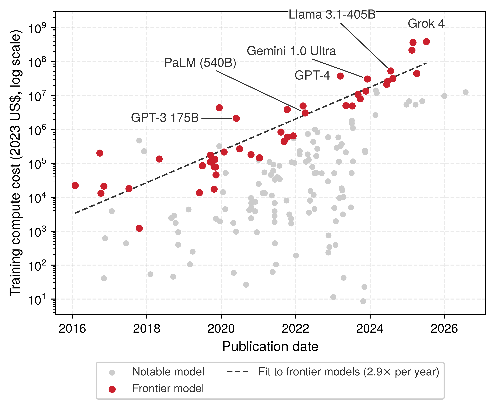
На аппаратном уровне воздействие на окружающую среду масштабируется с суммарным электропотреблением за весь жизненный цикл машины и опосредуется утилизацией ускорителей, накладными расходами на охлаждение дата-центра (power usage effectiveness) и углеродоёмкостью локальной электросети — массой CO2-экв., выбрасываемой на каждый поставляемый киловатт-час. CO2-экв. (эквивалент двуокиси углерода) выражает каждый парниковый газ как массу CO2 с тем же эффектом потепления. Внутри корпуса ускорителя энергию может определять перемещение данных. В эталонном техпроцессе 45 нм, лежащем в основе принципа перемещения энергии («Принцип движения энергии»), один доступ к DRAM вне кристалла стоит на два-три порядка больше энергии, чем 32-битная операция с плавающей запятой, хотя полные энергозатраты зависят также от ширины доступа, числа событий, повторного использования и самого устройства. Алгоритмические оптимизации и оптимизации среды исполнения снижают экологическую нагрузку лишь тогда, когда они сокращают измеренные ватт-часы при проверенном целевом качестве под производственной нагрузкой, пресекая это физическое рассеяние на уровне кремния.
↩︎ Физическая диспропорция энергозатрат между доступом к памяти вне кристалла и исполнением арифметики установлена в Специализация аппаратного обеспечения для машинного обучения.
Физические требования к ресурсам определяют и доступность развёртывания. Избыточно крупные модели, которым для удержания весов в памяти нужны узлы с несколькими ускорителями, связанные высокоскоростными интерфейсами (такими как NVLink), ограничивают развёртывание централизованными облачными мощностями. Сжатие моделей так, чтобы рабочие наборы помещались в обычную DRAM или единую память (unified memory) граничных процессоров, расширяет круг тех, кто может их запускать. Локальный запуск устраняет необходимость в постоянном высокоскоростном сетевом канале и регулярных счетах за облачные API, позволяя клиентским устройствам выполнять низкозадержанный приватный инференс там, где данные захватываются.
На производственном масштабе, где обслуживающие системы обрабатывают миллионы запросов ежедневно, неэффективность на отдельный запрос быстро множится по парку ускорителей. Согласно «железному закону» ML-систем (
Каждая оптимизация, разработанная ранее в этой книге, атакует конкретный член железного закона, и каждая снижает экологическую нагрузку лишь при условиях, оговорённых в собственной главе. Квантизация и прореживание (pruning) сокращают перемещаемые байты
Ответственная инженерия трактует эти оптимизации как проектные ограничения, заданные до обучения и развёртывания, а не как посмертные средства исправления разросшейся модели. Системные требования задают явные верхние границы по задержке, ёмкости памяти и энергопотреблению наряду с целевым качеством предсказания, а задача состоит в поиске наиболее компактной архитектуры и стратегии исполнения, которые им удовлетворяют. На практике это начинается с установления ограниченных «конвертов» машины (расчётная тепловая мощность, ёмкость батареи и пиковая задержка) до выбора или обучения архитектуры. Адресные оптимизации вроде квантизации или слияния ядер следуют только после выбора наиболее компактной достаточной архитектуры.
Развёртывание на границе сети (edge) делает эти пределы осязаемыми, поскольку пассивное тепловое рассеяние и ёмкость батареи задают бюджеты мощности, которые нельзя ослабить задним числом. Носимое устройство с иллюстративным бюджетом инференса 500 mW показывает последствия для выбора модели. При принятых здесь профилях активной мощности DS-CNN из «маяка» KWS (200K параметров при 50 mW) оставляет запас мощности в 10×, тогда как MobileNetV2 (3.5M параметров при 1.2 W) превышает тот же бюджет в 2.4× ещё до учёта устойчивого теплового режима.
Уложиться в лимит необходимо, но недостаточно. Детектор ключевых слов не заменяет модель компьютерного зрения лишь потому, что вписывается в лимит, а энергия на один инференс после развёртывания модели в масштабе складывается в суммарные выбросы и эксплуатационные расходы. Приёмы, снижающие измеряемую энергию на инференс, уменьшают энергию жизненного цикла лишь тогда, когда их экономия перевешивает добавленные затраты на обучение, предобработку или другую рабочую нагрузку, а финансовая экономия в облаке и кластерах напрямую зависит от выделения ресурсов и утилизации оборудования.
↩︎ Лимиты энергопотребления, памяти и задержки (latency), разделяющие развёртывание в облаке, на краю сети, на мобильных устройствах и в TinyML, определены в Физические ограничения развёртывания.
15.4.2 Совокупная стоимость владения
На сервисе ранжирования DLRM за циклом обучения стоимостью $3,200 следует примерно $500,000 в год на вычисления для обслуживания. Этот контраст показывает, как совокупная стоимость владения (total cost of ownership, TCO),14 то есть первоначальные и регулярные расходы системы за срок её службы, может при высоком трафике определяться регулярным инференсом. В отличие от сравнения облака и края сети, где эта сумма служит для выбора варианта развёртывания, взгляд на жизненный цикл разбивает сумму одного развёртывания на циклы обучения, регулярный инференс и эксплуатацию, чтобы выяснить, какая составляющая доминирует. В других системах могут доминировать обучение, данные, персонал или простой мощностей, поэтому именно измерение определяет, куда направить оптимизацию.
В производственном масштабе регулярный инференс может доминировать в стоимости жизненного цикла.
↩︎ Совокупная стоимость владения как сравнение облачного и краевого развёртываний, взвешивающее капитальные и операционные расходы, рассмотрена в Компромиссы и ограничения облачного ML.
Разбор чисел сервиса DLRM для его 10 million ежедневных пользователей показывает, почему эти две составляющие так далеки друг от друга. Один цикл обучения сам по себе выглядит значительным: подготовка данных занимает 100 GPU-hours по цене около $4/hour ($400), поиск гиперпараметров по нескольким конфигурациям требует 500 GPU-hours ($2,000), а финальное обучение — 200 GPU-hours ($800); в сумме цикл стоит $3,200.
Регулярный инференс многократно превосходит эту цифру, поскольку 10 million ежедневных пользователей и 20 ранжированных объектов на пользователя из анализа экспозиции и обратной связи требуют 200 million инференсов ежедневно. Если считать 10 milliseconds на инференс небатчированным, неперекрывающимся выделенным спросом на обслуживание GPU, получается около 23.1 GPUs, работающих непрерывно. При $2.50/GPU-hour годовая стоимость GPU для сценария достигает $506,944. Эта ставка ниже $4/hour, которую платят обучающие запуски, потому что постоянно работающий парк закупается как непрерывно резервированная мощность, а не по запросу.
За трёхлетний эксплуатационный период двенадцать ежеквартальных циклов обучения, включая первый, дают затраты на обучение около $38,400, а инференс за тот же период в сумме стоит $1.5M. Получающееся соотношение 40:1 специфично для этих допущений, но оно указывает, где усилия по оптимизации дают наибольшую отдачу: задержка инференса и эффективность обслуживания.
↩︎ Стоимость инференса — стоимость обслуживания, которую планирование мощности распределяет по запросам, — рассмотрена в Стоимость инференса на разном оборудовании.
Оптимизация на уровне запроса становится важной при обслуживании миллиардов запросов. Сокращение пятой части спроса на обслуживание ускорителя на запрос может снизить требуемое оборудование, если остальные допущения о рабочей нагрузке остаются фиксированными. Выбор оборудования среди CPU, GPU и тензорных процессоров (Tensor Processing Units) меняет затраты и углеродный след по-разному в зависимости от рабочей нагрузки и варианта развёртывания. Сжатие моделей с помощью квантизации и прореживания (pruning) может снизить стоимость массового инференса, если оно уменьшает измеряемый спрос на обслуживание без недопустимой потери качества.
Третья составляющая совокупной стоимости владения жизненным циклом (TCO) — эксплуатация: мониторинг, обслуживание, дообучение и реагирование на инциденты, — и все они масштабируются вместе со сложностью системы и со скоростью распределительного дрейфа в предметной области приложения.
Каждая из этих составляющих расходует ресурсы, которые после потребления одной системой машинного обучения не могут быть использованы для других целей, поэтому расточительное потребление в одном проекте ограничивает возможности других проектов. Поэтому инженерам следует оценивать возврат инвестиций (return on investment, ROI), спрашивая, оправдывает ли ценность, которую приносит система машинного обучения, потребление ею ресурсов. Рекомендательная система, повышающая вовлечённость на 1 процент, может не оправдать миллионы долларов вычислительных затрат, а система медицинской диагностики, спасающая жизни, — оправдывает. Соотношения стоимости развёртывания и обучения меняются в зависимости от трафика, утилизации, оборудования, периодичности обновлений, персонала и тяжести инцидентов, поэтому правильный выбор модели зависит от измеренной стоимости жизненного цикла и ценности задачи, а не от фиксированного соотношения.
Учёт стоимости и углерода
Перевод того же сценария в углерод требует измеренного или оценённого энергопотребления, накладных расходов объекта и применимой углеродной интенсивности энергосети. Учёт сохраняет трафик, спрос на обслуживание и бюджет обучения из разбора, добавляет эксплуатационную работу, которую разбор оставил неучтённой, и переводит каждый час ускорителя в выбросы с одним коэффициентом пересчёта. Обучение повторяется с каждым циклом дообучения, инференс — с каждым запросом, а эксплуатация накапливается через телеметрию, дежурных инженеров и реагирование на инциденты, поэтому каждая составляющая входит в трёхлетнюю сумму на своём основании. Дежурная инженерия учитывается в полных эквивалентах занятости (full-time equivalents, FTE), где один FTE — один инженер, работающий полный день.
Инженерный расчёт 15.4: Углеродная стоимость вычислений
Задача: Учёт стоимости должен перевести только электрическую энергию GPU в «кг CO2eq.» Какой углеродный фактор несёт один GPU-час при базовом сценарии, исключая хост, объект и овеществлённые воздействия?
Переменные:
- Мощность: 400 W на GPU (базовый сценарий).
- Интенсивность: 0.4 kg/kWh CO2eq (округлённая базовая интенсивность сети).
Математика: Уравнение 2 задаёт стандартное преобразование:
В Таблица 10 на инференс приходится 73.5 percent трёхлетней стоимости, на операции — 24.6 percent, а на обучение — лишь 1.9 percent. Из-за такого распределения долей эффективность превращается из вопроса настройки в проверку ответственности: небольшие сокращения на пути обслуживания умножаются на каждый запрос, который обрабатывает парк оборудования. То же распределение определяет, какое сокращение даёт большую экономию. За три года инференс обходится в 40 раз дороже обучения, поэтому сокращение спроса на обслуживание на 20 percent в расчёте на запрос экономит намного больше, чем сокращение общей стоимости обучения на 50 percent. Сокращение длительности только финального прогона не дало бы такой экономии на обучении, поскольку подготовка данных и поиск гиперпараметров остались бы нетронутыми.
| Категория | База | 3-Year Cost | Доля | Модельный углерод ускорителя |
|---|---|---|---|---|
| Обучение | 12 cycles |
$38K | 1.9% | 1.5 t |
| Инференс | 556 GPU-hours/day |
$1.52M | 73.5% | 97.3 t |
| Операции | $170K/year |
$510K | 24.6% | Не оценивалось |
| Итого TCO | $2.07M | 100% | ~98.9 t modeled subtotal |
Контрольная точка 15.4: Эффективность как ответственность
Полная стоимость владения показывает, где у ответственной оптимизации больше всего рычагов.
15.4.3 Воздействие на окружающую среду
Два дата-центра могут обслуживать в точности один и тот же парк DLRM-инференса при одинаковом счёте в долларах, но один из них выбрасывает в несколько раз больше углерода, чем другой, потому что его местная энергосистема работает на угле, а не на гидроэнергетике. Команда, которая досрочно заменяет исправные серверы ради экономии 10 процентов на электричестве, может увеличить чистые выбросы за срок службы, если учесть углерод, затраченный на производство нового кремния (Gupta и др. 2022 г.). Учёт TCO в Глава 15.4.2 сопоставлял оплачиваемые доллары вычислений с углеродной подытожкой только по GPU при одной базовой энергосистеме, но полный экологический учёт должен включать физические накладные факторы, которые ни один облачный счёт не детализирует.
Операционные выбросы зависят от энергии всей системы, эффективности использования энергии дата-центром (PUE) и углеродной интенсивности региональной энергосети (
↩︎ Граница измерения энергопотребления, отделяющая энергию на вилке сервера от накладных расходов дата-центра, вводится в Границы измерения мощности.
Оценка операционных выбросов первого порядка — это
Стоимость, энергия и выбросы — тоже различные измерения. Оптимизация, снижающая TCO, может не снижать энергию или выбросы, если она меняет утилизацию, оборудование или размещение рабочей нагрузки. Потребление электричества дата-центрами делает дизайн рабочей нагрузки, оборудование, облачный регион и время выполнения частью ответственной инженерии (Henderson и др. 2020 г.).
Углеродный учёт DLRM в Таблица 10 показывает, насколько односторонним может быть распределение углерода. При допущениях о спросе на обслуживание инференс выбрасывает 63× модельного CO2 ускорителя по сравнению со всеми 12 циклами обучения вместе взятыми, поэтому для сервиса такого рода рычаг снижения углерода — путь обслуживания, а не обучающий прогон. Оптимизация эффективности и экологическая ответственность совпадают, когда измеряемые энергия и выбросы за срок службы снижаются для требуемой рабочей нагрузки и целевого качества. Оценка жизненного цикла расширяет это измерение от производства оборудования до вывода из эксплуатации, а углеродно-осознанное планирование действует на углеродную интенсивность энергосети, перенося батч-задания на менее углеродные часы или регионы.
Те же физические величины, которые определяют производительность, влияют и на ответственность. Перемещение данных и вычисления вносят вклад в энергию на уровне чипа, тогда как выбросы дата-центра дополнительно зависят от утилизации, накладных расходов дата-центра, интенсивности энергосети и овеществлённых воздействий. Анализ Парето применим одинаково к справедливости, задержке и углероду, и первый вопрос всегда состоит в том, лежит ли текущий дизайн на фронтире, потому что доминируемый дизайн может улучшить сразу несколько целей. Ответственная инженерия расширяет задачу условной оптимизации, которой эта книга учит, на цели, включающие воздействие на общество наряду с пропускной способностью и задержкой.
Углерод обучения остаётся значимым на фронтирных масштабах, даже если в высоконагруженном сервисе вроде DLRM доминирует обслуживание, — потому что один фронтирный прогон сам по себе достаточно велик. Расчёт масштаба для обучения большой фундаментальной модели показывает, насколько крупным может быть это слагаемое. При допущении об энергосистеме из «расчёта на салфетке» 15.5 такой прогон превышает выбросы более сотни легковых автомобилей за год (см. поле).
Этот сценарий обучения превышает 100 автомобиле-лет выбросов.
Инженерный расчёт 15.5: Углеродный след масштабирования
Задача: Фундаментальная модель обучается в масштабе GPT-3, потребляя 1,287 MWh электроэнергии (Patterson и др. 2021 г.). Каково операционное воздействие на климат при заявленном допущении об углеродной интенсивности энергосистемы?
Математика:
- Потребление энергии: 1,287 MWh = 1,287,000 kWh.
- Углеродная интенсивность: этот сценарий использует
429 g/kWh CO2 (0.429 kg/kWh) (Patterson и др. 2021 г.) — среднее по энергосистеме США значение, немного выше округлённой базовой величины 0.4 kg/kWh из стоимостного учёта. Каждый расчёт задаёт собственное допущение об энергосистеме, и различие меняет результат менее чем на 10 процентов. - Суммарные выбросы: 1,287,000 kWh
0.429 kg/kWh = 552,123 kg CO2 (552 t). - Сравнение: сценарий принимает 4.6 t CO2 на легковой автомобиль в год. Эта годовая база отличается от базы срока службы в оценке 2019 года с пятью автомобилями, поэтому два автомобильных сравнения напрямую несопоставимы.
Системный вывод: при данном сценарии энергии обучения операционные выбросы равны принятому годовому выбросу 120 легковых автомобилей. Сокращение общей энергии обучения на 1 процент при той же энергосистеме убрало бы с дорог эквивалент около 1.2 cars.
Оценивая вычисления в киловатт-часах, тоннах CO2 и трёхлетних операционных долларах, мы ставим потребление ресурсов в один ряд со справедливостью и интерпретируемостью как измеримую границу системы. Спецификация, измерение, документирование и учёт ресурсов вместе определяют, чему должна удовлетворять ответственная система, но ни одна из этих границ не проверяет себя сама. Стадия Govern жизненного цикла делает их доказуемыми для тех, кто вне команды, через инфраструктуру, которая контролирует доступ к данным, ограничивает утечки приватности и сохраняет происхождение данных и аудитные свидетельства в эксплуатации.
15.5 Управление данными и соблюдение требований
Система распознавания ключевых слов делает проблему управления данными физически осязаемой. Голосовой ассистент, постоянно находящийся в режиме прослушивания, непрерывно оцифровывает звук в частных домах, хранит зарегистрированные профили дикторов и периодически синхронизируется с облачными конвейерами, которые переобучаются на звуке от всей популяции пользователей. Следовательно, каждая гарантия, установленная на предыдущих этапах, теперь зависит от того, какими данными система может располагать, кто имеет к ним доступ и какие свидетельства сохраняются.
Управление данными — инженерная дисциплина, превращающая регуляторные и этические обязательства в проверяемые технические средства контроля; это слой принуждения, который делает подотчётность операциональной. Метрики справедливости, карты моделей и оценки воздействия имеют практическую силу только если система способна доказать, какие данные она приняла, какие субъекты к ним обращались, какое правовое основание авторизовало обработку и были ли исполнены применимые запросы на удаление или оспаривание. Один лишь вопрос о правовом основании способен решить исход разбирательства. В 2023 году Ирландская комиссия по защите данных установила, что Meta полагалась на недействительное правовое основание для персонализированной рекламы и нарушила требования прозрачности и справедливости — провал управления данными, не связанный вообще ни с какой утечкой безопасности (Data Protection Commission 2023 г.).
Архитектуры хранения также служат механизмами принуждения в управлении данными: они определяют, какие субъекты получают доступ к данным, как отслеживаются запросы и удовлетворяют ли конвейеры правовым требованиям. Каждое архитектурное решение — от стратегий приёма данных через конвейеры ETL (extract, transform, load) до компоновки постоянного хранения — несёт последствия для управления данными, которые проявляются в ходе регуляторных аудитов, расследований приватности или отзывов моделей. Управление данными переводит абстрактную политику в конкретную системную инженерию: через аутентифицированные средства контроля доступа к тренировочным разделам, неизменяемую аудиторскую инфраструктуру, журналирующую доступ к датасетам, трансформации с сохранением приватности при извлечении признаков и детерминированные системы происхождения, прослеживающие тренировочные снимки до развёрнутых контрольных точек модели.
↩︎ Архитектуры хранения — база данных, хранилище данных и data lake — а также шаблоны доступа, которые каждая из них обслуживает, описаны в Варианты систем хранения.
Принцип: Соблюдение требований как инженерное ограничение
Инвариант: обязательства по управлению данными — это инженерные требования, а не необязательные политические надстройки.
Следствие: системы, обрабатывающие регулируемые данные, должны отображать применимые обязанности на технические и организационные средства контроля. Контроль доступа, удаление, оспаривание, аудит и происхождение могут быть обязательными или полезными в зависимости от юрисдикции, данных, субъекта и сценария использования. General Data Protection Regulation (GDPR), California Consumer Privacy Act (CCPA), бразильский General Data Protection Law (LGPD, Lei Geral de Proteção de Dados) и китайский Personal Information Protection Law (PIPL) различаются по охвату и обязанностям, поэтому ни один единый контрольный чек-лист не обеспечивает соответствие всем им сразу.
Управление данными превращает безопасность, приватность, соответствие требованиям и происхождение во взаимно зависимые инженерные ограничения, и система KWS показывает, где каждое из них применяется. Непрерывная запись звука, зарегистрированные профили и переобучение по всему парку устройств создают обязательства в области управления согласием, минимизации данных, аудита доступа и права на удаление, причём все четыре домена отображаются напрямую на точки принуждения на аппаратном уровне и в конвейерах этой архитектуры. Безопасность идёт первой, защищая сырые признаки, тренировочные разделы и артефакты модели на всём жизненном цикле приёма данных — через взаимную аутентификацию, авторизацию на основе ролей, шифрование при хранении и при передаче, а также управление ключами с аппаратной привязкой. Аппаратные хранилища ключей на периферийных микроконтроллерах защищают сохранённые шаблоны дикторов, взаимный TLS аутентифицирует телеметрию при передаче, а ролевые средства контроля доступа ограничивают доступ к централизованному тренировочному звуку в облачном хранилище.
Поскольку один лишь контроль доступа не ограничивает то, что аутентифицированный потребитель может узнать из прочитанных им записей, приватность регулирует раскрытие информации внутри этой границы — с помощью дифференциальной приватности и автоматического редактирования признаков. В системе KWS приватность удерживает фоновый звук в кольцевом буфере SRAM, пока не сработает триггер на устройстве, и ограничивает утечку информации при переобучении акустических моделей по всему парку устройств.
Там, где приватность управляет тем, что покидает устройство, соответствие требованиям (compliance) переводит юрисдикционно-специфичные законы (такие как GDPR, CCPA и LGPD) в окна хранения, проверку согласия и правила кросс-граничной репликации, как только данные поступают в облако. Тем самым соответствие требованиям определяет правовое основание обработки и объём любого рабочего процесса отзыва или удаления, который убирает подпадающие под действие голосовые профили и акустические данные из основных хранилищ и резервных копий.
Доказательство того, что правила безопасности, приватности и хранения были соблюдены, требует систем происхождения и аудита, делающих весь жизненный цикл данных инспектируемым. Сохранённая линия происхождения, связывающая развёрнутые веса через тренировочные снимки с авторизованными исходными записями, поддерживает проверку заявлений о безопасности и применимых обязательств. В конвейере KWS такая линия происхождения устанавливает провенанс через хэши содержимого и подписанные манифесты, которые связывают каждый развёрнутый бинарник DS-CNN через конкретные тренировочные разбиения и сиды акустической аугментации с исходными сырыми записями.
Управление данными работает как операционная модель, а не как единичный контроль. Фреймворк на Рисунок 7 располагает восемь элементов — от организационного надзора и политик соответствия до каталогов данных, пополнения данных, метрик качества, операционной деятельности и безопасности — вокруг центрального узла управления данными. Технические механизмы и организационные процессы должны функционировать как взаимно усиливающие подсистемы. Зашифрованное хранилище без сопоставленных с идентичностями средств контроля доступа всё ещё позволяет инсайдеру скопировать данные наружу, а соответствующее требованиям хранилище без проверяемых аудиторских следах не пройдёт регуляторную инспекцию. Внутри таксономии D·A·M управление данными — это управляющая плоскость оси данных (Data). Оно обеспечивает законное пополнение, границы приватности и целостность жизненного цикла данных, питающих Алгоритм, и работает на инфраструктуре оси машины (Machine), такой как зашифрованное хранилище, контроль доступа и журналы аудита.
Инженерные команды не работают в изоляции. Командные технические практики — журналирование аудита, тестирование на смещение и объяснимые интерфейсы — находятся в ядре расширяющихся организационных, отраслевых и регуляторных структур (Рисунок 8). Требования и правовые мандаты текут внутрь через каждую границу, а технические средства контроля в центре поставляют свидетельства, на которых держится внешнее соответствие требованиям. Далее этот раздел работает именно в самом внутреннем кольце, начиная с того, кто вообще может получить доступ к данным.
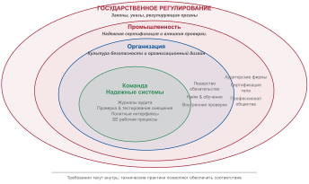
15.5.1 Архитектура безопасности и контроля доступа
Когда специалист по данным запрашивает в хранилище признаков KWS обучающие данные, она может читать агрегированные голосовые признаки, но не имеет доступа к исходным аудиозаписям, из которых они получены. Обслуживающий конвейер, напротив, может читать онлайн-признаки для инференса, не записывая в обучающий набор данных и не изменяя исходные данные. Это разделение отражает многоуровневую архитектуру безопасности, в которой требования управления переводятся в технически исполнимые средства контроля на каждом этапе конвейера. Хранилища признаков обеспечивают ролевую модель контроля доступа (RBAC), отображая организационные политики на аутентифицированные идентичности и права доступа к базе данных. Эти средства действуют на различных уровнях хранения. Объектное хранилище поддерживает политики доступа на уровне бакетов, хранилища данных реализуют безопасность на уровне столбцов и динамическое маскирование чувствительных полей, а хранилища признаков поддерживают изолированные пути чтения и записи, разделяющие низколатентные онлайн-запросы «ключ—значение» для инференса и высокопроизводительные офлайн-выгрузки для формирования батчей при обучении.
↩︎ Двухуровневая архитектура хранения — офлайн-колоночные хранилища и онлайн-кэши «ключ—значение» — введена в Хранилища признаков.
Механизмы контроля доступа остаются неполными без шифрования, которое защищает данные в покое и при передаче, но не предотвращает злоупотребление после расшифровки или авторизованного доступа. Обучающие корпусы шифруются ключами, хранящимися в выделенной службе управления ключами, хранилища признаков шифруют таблицы в покое, а периферийные устройства KWS шифруют передаваемые данные и проверяют подпись каждого обновления модели. Прочность каждого из этих средств определяется лишь качеством управления ключами и авторизации обновлений.
Когда обучение и обслуживание выполняются на инфраструктуре, не контролируемой владельцем данных, данные нуждаются в защите и во время вычислений над ними. Конфиденциальные вычисления обеспечивают такую защиту с помощью аппаратных защищённых анклавов (доверенных сред исполнения), изолирующих память и исполнение от программного обеспечения хоста, хотя они не защищают данные от приложения, уполномоченного их обрабатывать.
Сериализованные веса и контрольные точки требуют той же защиты, что и обучающие данные, поскольку загрузка непроверенной контрольной точки в формате, допускающем внедрение исполняемого кода, даёт злоумышленнику контроль над обучающими узлами и рабочими процессами инференса. Форматы, хранящие только тензоры, избегают этого механизма, а криптографические подписи позволяют проверить целостность и происхождение контрольной точки перед загрузкой, хотя ни то, ни другое не гарантирует отсутствие в модели бэкдоров.
Авторизованная загрузка оставляет поведение модели непроверенным. Отравленные обучающие примеры могут привнести бэкдоры, возмущённые входные данные при инференсе — ошибочную классификацию (атаки уклонения), а систематические запросы — извлечь функциональность модели (Tramèr и др. 2016 г.). Контроль доступа, криптографические анклавы и проверка артефактов устанавливают, кто может получить доступ к данным и моделям и как они защищены при хранении, передаче и исполнении, однако контроль доступа — лишь половина задачи. Даже авторизованные вызывающие стороны могут нарушить приватность, если данные или выходы модели сами раскрывают слишком много. API предсказаний или исходные веса могут показать, присутствовала ли конкретная запись в обучающем наборе (Shokri и др. 2017 г.), поэтому целостность артефактов и ограничение раскрытия информации требуют отдельных средств контроля.
15.5.2 Технические методы защиты приватности
Даже когда ролевой контроль доступа работает как задумано, специалисту по данным, запрашивающему обучающую таблицу, не нужны — и он не должен их видеть — отдельные записи пользователей, если достаточно агрегированной статистики; равно как выпущенная контрольная точка или API предсказаний не должна раскрывать, была ли запись конкретного клиента в обучающем наборе (Shokri и др. 2017 г.). Техники сохранения приватности15 закрывают этот разрыв, ограничивая то, что запросы и выходы модели раскрывают даже авторизованным вызывающим сторонам. Дифференциальная приватность ограничивает, насколько изменение любой одной записи в наборе данных может изменить распределение вероятностей экспортируемого выхода, например ответа на запрос или обученной модели. Границу задаёт параметр epsilon; чем меньше epsilon, тем сильнее приватность.16
Один из механизмов обучения, обеспечивающий дифференциальную приватность, — дифференциально приватный стохастический градиентный спуск (DP-SGD) (Abadi и др. 2016 г.). В отличие от стандартного отсечения градиентов, которое ограничивает усреднённый по батчу градиент ради численной устойчивости, DP-SGD отсекает градиент каждого отдельного примера по порогу
Стандартные ядра обратного распространения суммируют градиенты весов по размерности батча на месте по мере исполнения, поэтому они никогда не раскрывают норму градиента отдельного примера. Отсечение требует нормы градиента каждого примера до того, как эта сумма произойдёт, и прямой способ её получить — материализовать полный буфер градиента на каждый пример, так что занимаемый объём памяти под градиенты растёт пропорционально размеру батча. Для акустической модели KWS (200K параметров) один градиент FP32 занимает 800 KB, а батч из 256 посампловых градиентов — 204.8 MB. Тот же подход для GPT-2 с 1.5B параметрами потребовал бы 1.5 TB, что далеко превышает 80 GB одного H100.
Специализированные двухпроходные реализации отсечения вычисляют норму градиента каждого примера напрямую из активаций слоёв и обратно распространённых градиентов выхода, прежде чем накапливать перемасштабированные обновления весов. Они избегают посампловых буферов градиентов весов, но платят вычислениями за второй проход, что удлиняет каждый шаг обучения. Маленькие последовательные микробатчи вместо этого возвращают память ценой потерянного параллелизма, что тоже удлиняет каждый шаг. Цена DP-SGD — следовательно, пара измерений: пиковая память и время на шаг, снятые для выбранной реализации при нетронутых её допущениях об отсечении, шуме, выборке и учёте.
Эмпирические атаки дополняют эти формальные проверки. Атаки на определение членства измеряют, может ли наблюдатель установить, что конкретная запись была в обучающем наборе, а атаки инверсии модели используют выходы уверенности для восстановления чувствительных значений признаков или облика обучающего субъекта (Fredrikson и др. 2015 г.). Успешная атака раскрывает практическую утечку, но никакая эмпирическая атака не может доказать выполнение границы
Хотя дифференциальная приватность ограничивает утечку информации из выходов модели, сбор непрерывных потоков сырых сенсорных данных создаёт немедленную уязвимость, если сырые данные покидают устройство захвата. Архитектуры периферийных устройств постоянного прослушивания, такие как маячная система KWS, работают в условиях жёстких ограничений приватности, поскольку непрерывный фоновый семплинг микрофона должен сосуществовать со строгими границами минимизации и удержания данных. Чтобы уменьшить регулярную передачу данных наружу, эта схема ограничивает извлечение акустических признаков и детектирование wake-слова локальными маломощными микроконтроллерами или цифровыми сигнальными процессорами (DSP). Входящие аудиопримеры проходят через небольшой энергозависимый кольцевой буфер в SRAM на кристалле, где старые кадры непрерывно перезаписываются новыми данными импульсно-кодовой модуляции (PCM). Политика разрешает сохранять или отправлять аудио только после локального срабатывания детектора wake-слова. Поскольку детектирование может давать ложные срабатывания, валидация должна охватывать и детектор, и средства контроля буфера и исходящего трафика, включая то, какие аудиоданные до срабатывания становятся доступными после активации.
Удержание сырого аудио на устройстве обеспечивает минимизацию данных, но лишает централизованное обучение того акустического разнообразия, которое повышает точность. Федеративное обучение восстанавливает это разнообразие, перемещая обучение к данным. Способные к обучению клиенты, такие как сопряжённые телефоны или домашние хабы, обучаются на авторизованных локальных примерах и отправляют обновления модели вместо сырого аудио, а координатор объединяет эти обновления в общую модель.18 Ограниченный микроконтроллер KWS только исполняет результат. Подход обменивает риск централизации на физические узкие места. Каждый раунд передаёт обновления параметров по ограниченным беспроводным каналам восходящей связи, клиенты на батарейном питании выпадают посреди раунда, различия данных от дома к дому приводят к расхождению локальных обновлений, а сырые обновления всё ещё могут раскрывать обучающие примеры через атаки восстановления (Zhu и др. 2019 г.). Сжатие обновлений снижает объём связи, но само по себе не даёт гарантий приватности.
Безопасная агрегация позволяет координатору узнать только агрегат обновлений участвующих клиентов — в рамках предположений протокола об участии, потерях клиентов и возможном сговоре (Bonawitz и др. 2017 г.). То, что раскрывают сам агрегат и итоговая модель, остаётся за пределами его защиты; дифференциальная приватность ограничивает такую утечку, ограничивая влияние любой отдельной записи или клиента, при условии, что механизм обучения и учётчик приватности поддерживают выбранное отношение соседства. Дизайн, которому нужны оба механизма, должен по отдельности учитывать, что наблюдает любопытный координатор во время обучения и что могут вывести получатели из опубликованных контрольных точек.
Когда сработавшие аудиозаписи или агрегированные контрольные точки модели должны храниться на централизованной инфраструктуре для верификации или последующего обучения, защита приватности смещается к автоматизированному управлению жизненным циклом. Автоматизированные рабочие процессы удержания данных применяют политики времени жизни (time-to-live) к первичным хранилищам, кэшам, обучающим партициям и резервным копиям. Криптографическое стирание уничтожает ключи, необходимые для расшифровки охваченных копий; физическая перезапись — это отдельный механизм очистки хранилищ. Ни один из них не удаляет каждую копию автоматически. Рабочий процесс должен инвентаризировать реплики, копии ключей и резервные копии, определить применимые исключения из удержания и проверить, что охваченные данные больше не восстановимы в рамках выбранной модели угроз. Дифференциальная приватность, минимизация на устройстве, федеративное обучение и автоматизированное удержание поставляют технические механизмы, ограничивающие раскрытие данных, тогда как внешние законы решают, какие из этих механизмов обязательны и какие права могут реализовать затронутые лица.
15.5.3 Регулирование как архитектура
Когда кредитный сервис отказывает заявителю, который затем спрашивает почему, оспаривает решение и запрашивает доступ к использованным о нём данным или их удаление, пути удержания, стирания и объяснения перестают быть внутренними инженерными предпочтениями и становятся законодательно закреплёнными правами. Чтобы выполнить их, система должна делать больше, чем выдавать оценку точности. Она должна формировать объяснение, привязанное к конкретному решению, сохранять происхождение (lineage) модели и данных, приведших к этому результату, направлять спор на содержательное человеческое рассмотрение, вести журналы аудита и поддерживать рабочие процессы удаления или доступа там, где применимы права на данные. Явные регуляторные рамки превращают прозрачность, надзор и подотчётность в обязательные архитектурные требования.
Регулирование входит в архитектуру прежде всего через классификацию рисков. EU AI Act устанавливает всеобъемлющую рамку, классифицируя ИИ-системы по уровню риска и предписывая требования соответственно.19 Акт вступил в силу 1 августа 2024 года и применяется поэтапно: правила о запрещённых практиках начали действовать в 2025 году, тогда как обязательства для высокорисковых систем и других операторов вводятся по категориям систем и по мере выхода руководств по внедрению (European Parliament and Council of the European Union 2024 г.).
Для системных инженеров соответствие требованиям зависит от архитектурных возможностей, а не от дат поэтапного введения. Охваченные высокорисковые системы20 должны реализовать управление рисками, управление данными, техническую документацию, прозрачность, человеческий надзор, а также требования к точности, устойчивости и безопасности. Охваченная система принятия кредитных решений, следовательно, нуждается в аудируемости с самого начала: версии моделей, происхождение обучающих данных, доказательства валидации, дизайн человеческого надзора, журналирование и пост-развёртывательный мониторинг должны быть частью архитектуры, а не документами, собранными после запуска.
Оспариваемость добавляет второе архитектурное требование. GDPR переносит тот же сценарий работы заявителя в права субъектов данных. Статья 22 предоставляет субъектам данных в ЕС право не быть объектом решений, основанных исключительно на автоматизированной обработке и производящих юридические или сопоставимо значимые эффекты, с учётом указанных исключений и гарантий.21 Статья 15(1)(h) отдельно даёт субъектам данных доступ к содержательной информации о логике автоматизированного принятия решений, упомянутой в статье 22. Инженерным командам следует определить, какие решения охвачены, и соответственно спроектировать требуемые возможности объяснения и человеческого рассмотрения.
Там, где требуется содержательный путь рассмотрения, он должен быть укомплектован персоналом и опираться на сводки, данные о происхождении и инструменты аудита. Такое укомплектование масштабируется с объёмом решений. Если 0.1 percent из 1M ежедневных решений оспариваются или эскалируются, обученным рассмотрителям придётся обрабатывать 1,000 cases/day — это допущение о рабочей нагрузке, а не доля ошибок модели. Инструментарий рассмотрения также должен достаточно быстро показывать для каждого дела объяснение, происхождение и версию модели, чтобы очередь разбиралась.
Законодательство США секторального характера достигает схожих возможностей через доменно-специфичные требования к доказательствам, менее унифицированные, чем EU AI Act. В кредитном примере Equal Credit Opportunity Act (ECOA) и его исполняющий Regulation B требуют указания конкретных основных причин для охваченных неблагоприятных решений, и эти причины должны точно описывать фактически рассмотренные или оценённые факторы (Consumer Financial Protection Bureau 2023 г.). Здравоохранительное регулирование, включая Health Insurance Portability and Accountability Act (HIPAA)22 и руководства Food and Drug Administration (FDA), накладывает тот же шаблон с иными артефактами: контроль защищённой медицинской информации, записи валидации, журналы аудита и реагирование на инциденты. Во всех доменах задача состоит в том, чтобы перевести каждое обязательство в конкретную возможность: объяснение, человеческое рассмотрение, происхождение (lineage), контроль доступа, удаление, мониторинг или реагирование на инциденты. Поскольку одни и те же гарантии повторяются в разных режимах, Таблица 11 организует их по возможностям, а не по юрисдикциям.
| Обязательство (пример источника) | Возможность, которую должна обеспечить система | Машинная стоимость |
|---|---|---|
| Управление рисками и ведение записей для высокорисковых систем (EU AI Act) | Версионированные модели, происхождение данных, доказательства валидации, автоматические журналы событий | Хранилище журналов и поддержка графа происхождения |
| Оспариваемые автоматизированные решения (GDPR, статья 22) | Содержательный путь человеческого рассмотрения со сводками дел, объяснениями и данными о происхождении | Часы рассмотрителей, масштабирующиеся с объёмом решений |
| Причины решения (GDPR, статья 15; уведомления ECOA о неблагоприятных решениях) | Объяснение по каждому решению или коды причин, привязанные к фактически использованным факторам | Вычисления объяснения на пути обслуживания |
| Минимизация и стирание данных (GDPR) | Лимиты удержания, удаление по данным о происхождении, переобучение или unlearning, когда затронуты веса | Часы ускорителей на переобучение; рабочие процессы удаления |
| Защищённая медицинская информация (HIPAA) | Контроль доступа, шифрование, журналы аудита, удерживаемая документация | Байты журналов аудита за окно удержания |
| Недискриминация (трудовое, кредитное и жилищное законодательство) | Дезагрегированная оценка и мониторинг относительно обоснованных порогов | Размеченные данные оценки по группам; телеметрия паритета |
Законодательство о защите данных проникает в конвейер глубже, чем обязанности уровня решений, потому что его обязательства привязаны к самим данным, а не к решению. Когда европейский пользователь реализует применимое право на стирание по GDPR, голосовой ассистент должен определить, какие персональные данные и нижестоящие артефакты охвачены, и исполнить соответствующий рабочий процесс в сроки ответа, установленные регламентом (European Parliament и Council of the European Union 2016 г.). Эти обязательства становятся архитектурными ограничениями в дизайне конвейера, выборе хранилищ и операционных процедурах. Принцип минимизации данных GDPR требует ограничить сбор и удержание тем, что необходимо для заявленных целей. Права доступа по статье 15 охватывают персональные данные, находящиеся в обработке, и указанную информацию об этой обработке, но не каждый артефакт, лишь ассоциированный с пользователем.
Голосовые ассистенты, работающие глобально, сталкиваются с перекрывающимися регуляторными режимами, потому что требования различаются по юрисдикциям и применяются по-разному в зависимости от возраста пользователя и чувствительности данных. Правила трансграничной передачи GDPR допускают передачу через решения об адекватности, соответствующие гарантии или ограниченные оговорки, а не вводят категорическую локализацию данных. Эти правила всё же могут определять региональные решения по хранению, репликации и обработке.
Структурированная карточка данных превращает эти операционные требования к метаданным в проверяемые поля. Карточка в Рисунок 9, адаптированная из спецификации Open Images Extended (MIAP) (Pushkarna и др. 2022 г.), разделяет авторство, основные мотивации, явные запреты безопасности (например, запрет на классификацию по возрасту или полу) и методологические оговорки. Хотя документирование этих границ само по себе не гарантирует юридического соответствия, оно даёт проверяемую базу, необходимую для проверок при приёме данных конвейером.
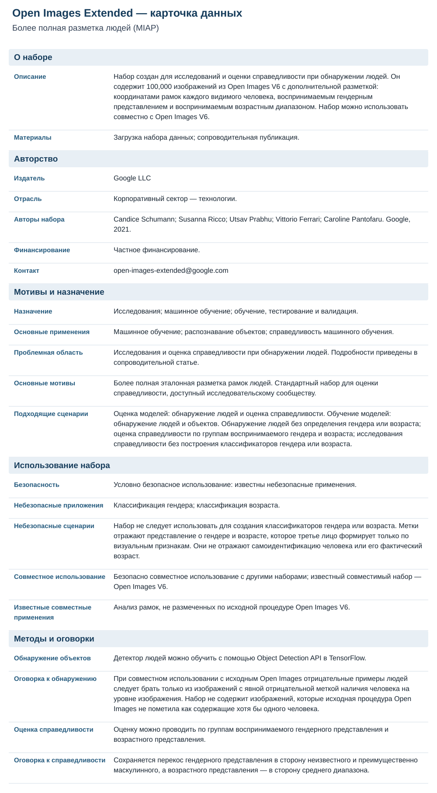
Инженерный ответ на эти нормативные требования — проактивное архитектурное проектирование. Команды, которые закладывают документирование, мониторинг, объяснимость и человеческий контроль в системы с самого начала, демонстрируют соответствие требованиям эффективно. Команды же, вынужденные доустанавливать эти возможности задним числом, сталкиваются с дорогой переработкой конвейеров или блокировкой развёртывания. Практически каждая нормативная обязанность в итоге задаёт инфраструктуре одни и те же два вопроса: какие данные породили эту модель и кто прикасался к этим данным и на каком основании. Ответить на них призваны системы lineage и аудита.
15.5.4 Построение инфраструктуры lineage данных
Когда регулятор проверяет, какие обучающие данные породили развёрнутую модель, или пользователь реализует применимое право на удаление, организация должна отвечать силами инфраструктуры, а не ручным расследованием. Граф lineage, построенный для воспроизводимости в Происхождение преобразований и Версионирование и происхождение, — направленный ациклический граф (DAG) из версий артефактов и задач преобразования — это та же самая структура, которую запрашивает аудит.23 Управление (governance) добавляет к этому графу обязанности, а не новую систему. Записи приёма данных должны связывать каждую запись KWS со способом её получения и основанием согласия, а границы использования, заявленные в карточке данных (Рисунок 9), определяют, какие обучающие задачи могут потреблять какие разбиения признаков.
Обязанность, которую lineage обслуживает наиболее непосредственно, — удаление по данным lineage. Когда поступает запрос на удаление, обход графа от исходной записи выявляет кандидатные производные артефакты (кэшированные спектрограммы, эмбеддинги признаков, снимки обучения и веса контрольных точек) для определения области действия и возможной инвалидации, переобучения или юридической проверки. Рёбра развёртывания продолжают тот же обход вплоть до поля. Поскольку lineage фиксирует, какую версию модели скачало каждое устройство, дефект качества или соответствия, позднее обнаруженный в обучающих данных, можно проследить до устройств, на которых исполняются затронутые модели, и отозвать их там. Lineage фиксирует происхождение, но подотчётная эксплуатация требует также истории доступа: кто прикасался к данным, когда и на каком основании.
↩︎ Lineage преобразований, фиксирующий версию кода, параметры и историю обработки для каждого набора данных, описан в Происхождение преобразований.
15.5.5 Инфраструктура аудита и подотчётность
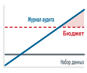
Объём аудита может перерасти бюджет хранения, в то время как набор данных остаётся плоским.
Запись истории доступа для аудитов HIPAA или Sarbanes-Oxley (SOX, закон США, регулирующий корпоративную финансовую отчётность) может многократно увеличивать объём записей. Если производственное хранилище признаков логирует полный payload признаков при каждом чтении, каждое чтение порождает запись журнала, значительно превышающую сам фиксируемый доступ, и журнал аудита может тогда перерасти сам обучающий набор данных и превысить его бюджет хранения, оставаясь при этом набором данных неизменным по объёму. Следы подотчётности24 фиксируют события доступа ради выполнения юридических обязанностей, и при фиксированной схеме событий удерживаемый объём зависит от числа записываемых событий в единицу времени, байт на событие и окна удержания. Больше доступов или инструментированных стадий увеличивает число событий, а логирование полных payload признаков и промежуточных тензоров активаций резко увеличивает байты на событие. Разделение компактных метаданных аудита и сырых данных payload контролирует этот множитель.
Производственные архитектуры keyword spotting применяют это разделение через многоуровневую топологию аудита, в которой каждый уровень логирует лишь то, что позволяют его бюджеты хранения и пропускной способности. На граничном уровне микроконтроллеры, работающие в рамках жёстких бюджетов SRAM, логируют локальные переходы состояний, метки времени пробуждения и состояния питания в энергозависимые кольцевые буферы, а затем выгружают эти записи батчами, экономя энергию радиомодуля и пропускную способность восходящего канала. Требование удержания определяет, какие события могут идти по этому энергозависимому пути. События, которые должны пережить потерю питания, требуют энергонезависимого локального хранения до подтверждения durable-получения центральным хранилищем, что добавляет энергию записи и износ накопителя в бюджет устройства. Если требования удержания превышают доступный бюджет хранения или восходящего канала, конструкция должна до развёртывания сократить необязательную телеметрию либо предусмотреть дополнительную ёмкость.
Когда телеметрия достигает централизованной инфраструктуры, аудит смещается с ограниченных по пропускной способности граничных устройств на высокопроизводительные хранилища признаков. На этом уровне признаков офлайн- и онлайн-хранилища признаков порождают audit-события с добавлением без перезаписи для каждой транзакции чтения и записи. Вместо дублирования высокоразмерных векторов признаков эти события фиксируют идентификаторы запрашивающих сервисов, авторизованные псевдонимы субъектов, хеши групп признаков и метки времени чтения. Эта стратегия логирования только метаданных обеспечивает точную проверку доступа, сохраняя объём журнала пропорциональным транзакциям доступа, а не размерам payload.
Из хранилищ признаков данные поступают в обучающие конвейеры, исполняемые на кластерах ускорителей. На этом обучающем уровне планировщики кластера записывают детерминированные манифесты, напрямую отображающие обучающие задачи на хеши неизменяемых разбиений данных, SHA git-коммитов и конфигурации гиперпараметров. Хотя такие манифесты поддерживают проверку целостности конвейера и воспроизводимости, они обнажают системную границу. Журналы доступа подтверждают, какие записи были обработаны, но не могут показать, сохраняются ли удалённые пользовательские данные внутри выученных весов модели. Если применимая обязанность по удалению охватывает развёрнутый артефакт модели, командам необходимо рассмотреть переобучение, валидированное machine unlearning (устранение влияния обучающей записи на выученные веса без обучения с нуля (Cao и Yang 2015 г.; Bourtoule и др. 2021 г.)) либо иные юридически приемлемые меры. Одни лишь журналы доступа к базе данных не могут доказать удаление обучающего вклада.
Нормативные требования распространяют ответственность аудита с доступа к данным на поведение инференса в момент предсказания. Реконструкция того, почему кредитный сервис отказал конкретному заявителю в Глава 15.3.2.1 или почему граничный голосовой ассистент вызвал ложное срабатывание детектора wake-word, требует аудита точного рабочего состояния в момент инференса. Без логирования времени инференса след аудита может подтвердить доступ к базе данных, не фиксируя, какая контрольная точка модели, порог решения и признаки среды исполнения породили данное решение.
Сохранение сырых входных тензоров для каждого запроса инференса перегрузило бы пропускную способность записи хранилища; производственные обслуживающие системы вместо этого записывают компактные, ограниченные по назначению манифесты решений. Эти манифесты фиксируют хеш активной версии модели, порог решения среды исполнения, выходные оценки уверенности или коды причин, а также криптографические хеши входных признаков, поддерживая индексированный поиск свидетельств решений. Хеш входа идентифицирует содержимое, но не позволяет его реконструировать; для воспроизведения также требуется надлежащим образом удерживаемый источник или авторизованное восстанавливаемое представление, вместе с соответствующими артефактами исполнения.
На всех этих уровнях — граничном, уровне признаков, обучающем и обслуживающем — управление (governance) использует логирование и контроль доступа на оси Machine, чтобы доказать обещания оси Data. Однако даже при наличии такой инфраструктуры команда всё ещё может подорвать собственные защитные меры, когда переносит интуиции из детерминированного ПО на статистические системы.
15.6 Заблуждения и ловушки
Команды могут потерпеть неудачу даже после того, как собраны фреймворки оценки, метрики справедливости, механизмы объяснимости, анализы эффективности и инфраструктура управления. Команда может добавить справедливость задним числом после успеха на бенчмарках, доверять агрегированной точности или относиться к свидетельствам соответствия как к бумажкам, а не как к поведению системы, опираясь на интуиции из традиционной программной инженерии, где ошибки локальны, а тестирование детерминировано.
Заблуждение: Ответственностью можно заняться после того, как система достигнет технических целей.
Команды исходят из того, что ограничения справедливости можно добавить задним числом, как только модели покажут сильные результаты на бенчмарках. В продакшене ранние архитектурные решения определяют, какие вмешательства остаются возможными. Инструмент найма Amazon, заброшенный после того, как исправление не удалось (Глава 15.2.1), — наглядный тому пример. Встроить ограничения справедливости на раннем этапе может быть дешевле, чем добавлять их после того, как зафиксированы контракты данных, мониторинг и критерии релиза.
Ловушка: Полагаться на агрегированные метрики при оценке справедливости.
Инженеры исходят из того, что высокая общая точность означает, что система хорошо работает для всех пользователей. Порок средних (Глава 15.3.2) показывает, почему эта интуиция подводит: агрегированные метрики могут скрывать большие расхождения между подгруппами. Анализ кредитного сервиса в Глава 15.3.2.1 показал разрыв TPR в 30 percentage-point, при этом квалифицированные заявители из меньшинства получали отказ в 4× чаще, чем из группы большинства. Такие расхождения могут сохраняться незамеченными, если стандартный мониторинг отслеживает только агрегаты. Продакшен-системы требуют дезагрегированной оценки с порогами, специфичными для приложения, — например, порога TPR в 5 процентных пунктов, использованного для кредитного сервиса.
Заблуждение: Удаление чувствительных атрибутов из обучающих данных устраняет смещение.
Команды удаляют пол, расу и другие защищённые атрибуты, ожидая, что это обеспечит справедливость. Другие признаки могут выступать прокси-переменными, когда они коррелируют с чувствительными характеристиками. Почтовые индексы, паттерны покупок, история браузинга, названия колледжей и выбор языка могут нести косвенный демографический сигнал. Инструмент найма Amazon продолжал кодировать пол через названия колледжей и организаций после того, как явные упоминания пола были удалены (Глава 15.2.1), а алгоритм управления медицинским уходом (история из практики 15.1) воспроизводил расовое неравенство через свою целевую функцию стоимости — прокси, который не удалит ни один фильтр атрибутов. Одно лишь удаление защищённых атрибутов не устанавливает справедливость.
Ловушка: Считать документацию достаточной подотчётностью.
Команды вкладывают усилия в model cards, а затем считают требования ответственности выполненными. Документация обеспечивает прозрачность (Глава 15.3.3.2), но не принуждение. Model card с пометкой «не валидировано для решений с высокими ставками» не имеет эффекта, когда система перепрофилируется для одобрения кредитов без технических ограничений. Подотчётность требует операционной интеграции: дашбордов мониторинга, документированных порогов оповещений о расхождениях между подгруппами, процедур реагирования на инциденты и контроля доступа, предотвращающего развёртывание за пределами валидированных сценариев использования.
Заблуждение: Ответственный ИИ — это прежде всего вопрос юридического соответствия.
Команды относятся к ответственности как к внешнему надзору, а не как к инженерной практике. Инженерные решения, принятые за месяцы до юридической экспертизы, ограничивают пространство решений сильнее, чем любая оценка соответствия. Выбор архитектуры определяет, какие вмешательства для справедливости возможны, а проектирование конвейера данных — возможна ли вообще дезагрегированная оценка. Как устанавливает Глава 15.2.5, системы, спроектированные с ответственностью как инженерной целью, позволяют эффективно проводить валидацию; системы, в которых ответственность добавляется на поздней стадии проверки, сталкиваются с перепроектированием или развёртыванием с документированными рисками.
Ловушка: Измерять воздействие на окружающую среду от обучения, но не от инференса.
Публичная дискуссия сосредоточена на углеродном следе обучающих прогонов, и инженеры часто следуют этой рамке при оценке экологической ответственности. Иллюстративный анализ TCO в Глава 15.4.2 показывает, почему такой фокус неполон. При его предположениях о необатченном спросе на сервис для ранжирующего сервиса DLRM (Таблица 10) отношение стоимости инференса к обучению составляет около 40:1, а инференс испускает примерно в 63× раза больше CO2, чем обучение. Модель, обучаемая периодически, но обслуживаемая миллионы раз ежедневно, может иметь жизненный цикл, в котором занимаемый объём ресурсов определяется инференсом, а не обучением. Эти значения зависят от сценария, но они показывают, почему учёт жизненного цикла должен включать оба слагаемых.
Заблуждение: Веса модели освобождены от управления данными и запросов на удаление.
Команды часто исходят из того, что после компиляции обучающих данных в веса модели данные исчезли, и обязательства по соответствию не могут достичь артефакта. В действительности модели могут запоминать обучающие данные, а атаки на определение принадлежности (membership inference) могут раскрыть, встречалась ли чувствительная запись в обучающем наборе (Shokri и др. 2017 г.). В отличие от удаления из базы данных, нейронная сеть через градиентные обновления размывает статистическое влияние каждой обучающей точки по всем своим параметрам, поэтому верифицируемое устранение этого влияния вынуждает к системным компромиссам. Точное переобучение с нуля на очищенном наборе данных даёт эталон для удаления вклада исключённых записей, но заново расходует бюджет обучения (потенциально тысячи часов ускорителей) и его углеродные выбросы. Оно также не стирает другие копии или факты, выводимые из удерживаемых данных. Забывание машины (machine unlearning), введённое вместе с инфраструктурой аудита (Глава 15.5.5), стремится ограничить эту стоимость, но проверка того, что вмешательство устраняет статистическое влияние, не ухудшая полезность модели, остаётся открытой системной задачей. Инженерные команды должны отслеживать происхождение «данные-модель» и совместно с юристами и специалистами по приватности оценивать переобучение, machine unlearning или компенсирующие меры всякий раз, когда запрос на удаление затрагивает развёрнутые артефакты.
Во всех этих неудачах повторяющаяся ошибка — трактовать ответственность как нечто, добавляемое после построения системы, а не как свойство системы. Измеримые ограничения, непрерывный мониторинг и принудительно исполнимое управление проносят ответственность через весь жизненный цикл.
15.7 Итоги
Ответственная инженерия — это инженерия ML-систем, доведённая до конца, а не отдельная дисциплина. Глава проследила путь от диагностики неудач через предотвращение к принуждению, начав с разрыва ответственности (расстояния между технической эффективностью и ответственными результатами) и показав, как прокси-переменные, петли обратной связи и сдвиг распределения могут вредить пользователям, пока обычные метрики остаются приемлемыми. Инженерный ответ следует за жизненным циклом модели. Спецификация фиксирует цели, популяции и надзор до того, как обучение их закроет. Метрики справедливости делают расхождения измеримыми. Объяснение и документация выбираются под применимые требования заинтересованных сторон и регуляторов. Инфраструктура мониторинга может выявлять тихие отказы и связывать сигналы с реагированием.
Перевод вопросов ответственности в измеримые свойства делает их разрешимыми. Обоснованное, специфичное для приложения ограничение на расхождение проверяемо; «быть справедливым» — нет. Этот перевод выходит за рамки справедливости: в иллюстративном сценарии TCO главы снижение спроса на ускорительный сервис на 20 percent экономит $304K и, по модели, позволяет избежать 19 t CO2 при заявленных предположениях. Документация становится model cards с явным целевым использованием и известными ограничениями. Управление становится контролем доступа, отслеживанием происхождения и инфраструктурой аудита, которые делают свидетельства соответствия доступными, а не просто декларируемыми. Во всех этих случаях абстрактные этические обязательства превращаются в конкретные инженерные требования, которые можно специфицировать, тестировать, мониторить и принуждать к исполнению.
Каждая строка карты главы (Таблица 1) теперь несёт измеренную машинную стоимость. Спецификация требует размеченных данных для оценки пропорционально тому, насколько редка каждая названная популяция, а защита от атак — второй head сети. Точная атрибуция требует вычислений для объяснения, растущих экспоненциально с числом признаков, а сдерживание обратной связи — рандомизированного исследовательского трафика. Сервис DLRM потребляет часы ускорителей и тонны CO2, а управление — байты логов, шум приватности и часы на переобучение.
Практики в каждой строке разделяют один принцип: свойство ответственности можно принудительно исполнить только на той стадии жизненного цикла, где ещё остаётся свобода его изменить. Измерение может проверить только те популяции, которые назвала спецификация; документация может записать только то, что произвело измерение; управление может доказать только то, что сохранил конвейер. Поэтому система, откладывающая справедливость, эффективность, прозрачность или управление на позднюю проверку, неполна в том же смысле, что и система, выпущенная без бюджета задержки: требование существует, но ничто в архитектуре не может его выполнить. Количественные инструменты главы умещаются в одну таблицу (Таблица 12), и каждый из них превращает требование ответственности в число, которое команда может вычислить до запуска и мониторить после.
| Величина | Формула | Где выведено |
|---|---|---|
| Разрыв выравнивания | Уравнение 1 | |
| Демографический паритет | Глава 15.3.2.1 | |
| Равные возможности | Глава 15.3.2.1 | |
| Выровненные шансы | Равные возможности для обоих |
Глава 15.3.2.1 |
| Размер выборки среза | Худший случай поля |
Глава 15.3.1 |
| Стоимость точной атрибуции | Глава 15.3.3.1 | |
| Обратная связь смещения | Глава 15.3.4 | |
| Операционный углерод | Глава 15.4.3 | |
| Объём журнала аудита | Записанных событий в единицу времени, умноженных на байт на событие и на окно хранения | Глава 15.5.5 |
Основные выводы: Надёжен для кого?
- Агрегированная корректность скрывает вред: модель может выглядеть точной в агрегате, в то время как доля ошибок одной подгруппы в 43.1× раза выше, чем у другой, как в аудите Face++ Gender Shades. Поэтому ответственная оценка начинается с дезагрегированных и пересекающихся срезов, а не только с агрегированной точности.
- Ответственность становится проверяемой через пороги: «быть справедливым» не проверяемо, но ограниченное расхождение, документированное целевое использование и требования объяснимости — проверяемы. Перевод ценностей в измеримые ограничения позволяет командам анализировать компромиссы между справедливостью, точностью, задержкой и стоимостью.
- Эффективность — это социальное ограничение: эффективная модель может снизить энергопотребление и стоимость и расширить круг тех, кто может её развернуть. В иллюстративном сценарии главы отношение стоимости инференса к обучению составляет 40:1, что делает оптимизацию на каждый запрос ответственной инженерией.
- Мониторинг должен следить за исходами: сбои смещения и приватности могут продолжаться при зелёных дашбордах доступности, потому что вредные предсказания выглядят операционно нормально. Продакшен-мониторинг должен отслеживать исходы подгрупп, происхождение данных, петли обратной связи и пути инцидентов с той же строгостью, что и регрессии задержки.
- Управление должно быть встроено: model cards, datasheets, контроль доступа, процессы удаления, пути человеческой проверки и журналы аудита — это техническая инфраструктура, а не необязательные политические надстройки. Регулирование, такое как GDPR, требует возможностей, которые должны быть спроектированы в конвейер; позднее исправление может остаться возможным, но будет более узким и дорогим, когда система уже обслуживает решения.
Система, делающая в точности то, что ей велели, опасна именно потому, что приказ никогда не бывает полным. Каждая цель, данная модели, — это спецификация с пробелами, а оптимизатор — машина для их нахождения. Он может воспроизвести смещение, таящееся в данных, гнаться за прокси вместо цели и назвать результат успехом, потому что ничто в целевой функции не говорило иного. Ответственная инженерия — это дисциплина возвращения в систему того, что спецификация упустила. Ограничение здесь того же рода, что книга накладывала на задержку и память, только здесь оно защищает людей, которых цель никогда не называла. Модель, быстрая и точная, но ошибающаяся в том, кого она обслуживает, не провалилась меньше, чем падающая, — лишь тише.
Дальнейшие шаги: От локальных целей ко всей системе
Ответственность была последним ограничением, добавленным этой книгой. Заключение возвращается к запросу голосового ассистента, открывшему книгу, прослеживает его через все слои, построенные главами, и собирает их количественные принципы — от железного закона (принцип «Железный закон ML-систем») и далее — в одну рамку для рассуждения обо всём стеке, где каждый компонент может выполнить свою цель, пока система всё ещё не достигает своей.
использованная литература
Abadi, M., A. Chu, I. Goodfellow, и др. 2016 г. «Deep Learning With Differential Privacy». Proceedings of the 2016 ACM SIGSAC Conference on Computer and Communications Security, CCS ’16, 308–18. https://doi.org/10.1145/2976749.2978318.
Amodei, Dario, и Danny Hernandez. 2018 г. «AI and Compute». OpenAI Blog 6. https://openai.com/research/ai-and-compute.
Angwin, Julia, Jeff Larson, Surya Mattu, и Lauren Kirchner. 2016 г. Machine Bias. ProPublica investigation. https://www.propublica.org/article/machine-bias-risk-assessments-in-criminal-sentencing.
Barocas, Solon, и Andrew D. Selbst. 2016 г. «Big Data’s Disparate Impact». California Law Review 104: 671–732. https://doi.org/10.2139/ssrn.2477899.
Bellamy, Rachel K. E., Kuntal Dey, Michael Hind, и др. 2019 г. «AI Fairness 360: An extensible toolkit for detecting and mitigating algorithmic bias». IBM Journal of Research and Development 63 (4/5): 4:1–15. https://doi.org/10.1147/jrd.2019.2942287.
Bird, Sarah, Miro Dudı́k, Richard Edgar, и др. 2020 г. «Fairlearn: A toolkit for assessing and improving fairness in AI». Microsoft Technical Report MSR-TR-2020-32.https://www.microsoft.com/en-us/research/publication/fairlearn-a-toolkit-for-assessing-and-improving-fairness-in-ai/ .
Bolukbasi, Tolga, Kai-Wei Chang, James Y. Zou, Venkatesh Saligrama, и Adam Tauman Kalai. 2016 г. «Man is to Computer Programmer as Woman is to Homemaker? Debiasing Word Embeddings». Advances in Neural Information Processing Systems (NeurIPS), 4349–57.https://proceedings.neurips.cc/paper_files/paper/2016/hash/a486cd07e4ac3d270571622f4f316ec5-Abstract.html .
Bonawitz, Keith, Vladimir Ivanov, Ben Kreuter, и др. 2017 г. «Practical Secure Aggregation for Privacy-Preserving Machine Learning». Proceedings of the 2017 ACM SIGSAC Conference on Computer and Communications Security, 1175–91. https://doi.org/10.1145/3133956.3133982.
Bourtoule, Lucas, Varun Chandrasekaran, Christopher A. Choquette-Choo, и др. 2021 г. «Machine Unlearning». 2021 IEEE Symposium on Security and Privacy (SP), 141–59. https://doi.org/10.1109/sp40001.2021.00019.
Buolamwini, Joy, и Timnit Gebru. 2018 г. «Gender Shades: Intersectional Accuracy Disparities in Commercial Gender Classification». Conference on fairness, accountability and transparency, 77–91. http://proceedings.mlr.press/v81/buolamwini18a.html.
Cao, Yinzhi, и Junfeng Yang. 2015 г. «Towards Making Systems Forget With Machine Unlearning». 2015 IEEE Symposium on Security and Privacy, 463–80. https://doi.org/10.1109/sp.2015.35.
Chouldechova, Alexandra. 2017 г. «Fair Prediction With Disparate Impact: A Study of Bias in Recidivism Prediction Instruments». Big Data 5 (2): 153–63. https://doi.org/10.1089/big.2016.0047.
Consumer Financial Protection Bureau. 2023 г. 12 CFR 1002.9: Notifications (Regulation B, Equal Credit Opportunity Act). https://www.consumerfinance.gov/rules-policy/regulations/1002/9/.
Cottier, Ben, Robi Rahman, Loredana Fattorini, Nestor Maslej, Tamay Besiroglu, и David Owen. 2024 г. «The rising costs of training frontier AI models». arXiv preprint arXiv:2405.21015. https://arxiv.org/abs/2405.21015.
Dastin, Jeffrey. 2018 г. «Amazon Scraps Secret AI Recruiting Tool That Showed Bias Against Women». Reuters. https://www.reuters.com/article/us-amazon-com-jobs-automation-insight-idUSKCN1MK08G/.
Data Protection Commission. 2023 г. Data Protection Commission Announces Conclusion of Two Inquiries into Meta Ireland. Regulatory press release.https://www.dataprotection.ie/en/news-media/data-protection-commission-announces-conclusion-two-inquiries-meta-ireland .
Dwork, Cynthia. 2008 г. «Differential Privacy: A Survey of Results». В Theory and Applications of Models of Computation. Springer Berlin Heidelberg. https://doi.org/10.1007/978-3-540-79228-4_1.
Dwork, Cynthia, Moritz Hardt, Toniann Pitassi, Omer Reingold, и Richard Zemel. 2012 г. «Fairness Through Awareness». Proceedings of the 3rd Innovations in Theoretical Computer Science Conference, 214–26. https://doi.org/10.1145/2090236.2090255.
Dwork, Cynthia, Frank McSherry, Kobbi Nissim, и Adam Smith. 2006 г. «Calibrating Noise to Sensitivity in Private Data Analysis». В Theory of Cryptography Conference (TCC), под редакцией Shai Halevi и Tal Rabin, т. 3876. Lecture Notes в Computer Science. Springer Berlin Heidelberg. https://doi.org/10.1007/11681878_14.
Epoch AI. 2026 г. Notable AI Models. https://epoch.ai/data/notable-ai-models.
Equal Employment Opportunity Commission, Civil Service Commission, Department of Labor, и Department of Justice. 1978 г. Uniform Guidelines on Employee Selection Procedures. Code of Federal Regulations. https://www.ecfr.gov/current/title-41/subtitle-B/chapter-60/part-60-3.
European Data Protection Board. 2018 г. Guidelines on Automated Individual Decision-Making and Profiling for the Purposes of Regulation 2016/679.https://www.edpb.europa.eu/our-work-tools/our-documents/guidelines/automated-decision-making-and-profiling_en .
European Parliament and Council of the European Union. 2024 г. Regulation (EU) 2024/1689 of the European Parliament and of the Council of 13 June 2024 laying down harmonised rules on artificial intelligence (AI Act). Official Journal of the European Union, L 2024/1689. https://eur-lex.europa.eu/eli/reg/2024/1689/oj/eng.
European Parliament, и Council of the European Union. 2016 г. Regulation (EU) 2016/679 of the European Parliament and of the Council of 27 April 2016. Official Journal of the European Union. https://eur-lex.europa.eu/eli/reg/2016/679/oj/eng.
Fitzpatrick, Thomas B. 1988 г. «The Validity and Practicality of Sun-Reactive Skin Types I Through VI». Archives of Dermatology 124 (6): 869. https://doi.org/10.1001/archderm.1988.01670060015008.
Fredrikson, Matt, Somesh Jha, и Thomas Ristenpart. 2015 г. «Model Inversion Attacks That Exploit Confidence Information and Basic Countermeasures». Proceedings of the 22nd ACM SIGSAC Conference on Computer and Communications Security, 1322–33. https://doi.org/10.1145/2810103.2813677.
Gebru, Timnit, Jamie Morgenstern, Briana Vecchione, и др. 2021 г. «Datasheets for datasets». Communications of the ACM 64 (12): 86–92. https://doi.org/10.1145/3458723.
Gupta, Udit, Young Geun Kim, Sylvia Lee, и др. 2022 г. «Chasing Carbon: The Elusive Environmental Footprint of Computing». IEEE Micro 42 (4): 37–47. https://doi.org/10.1109/MM.2022.3163226.
Hardt, Moritz, Eric Price, и Nathan Srebro. 2016 г. «Equality of Opportunity in Supervised Learning». Advances in Neural Information Processing Systems (NeurIPS) 29: 3315–23. https://papers.nips.cc/paper/6374-equality-of-opportunity-in-supervised-learning.
Henderson, Peter, Jieru Hu, Joshua Romoff, Emma Brunskill, Dan Jurafsky, и Joelle Pineau. 2020 г. «Towards the Systematic Reporting of the Energy and Carbon Footprints of Machine Learning». CoRR abs/2002.05651 (248): 1–43. https://doi.org/10.48550/arxiv.2002.05651.
Kamiran, Faisal, и Toon Calders. 2012 г. «Data Preprocessing Techniques for Classification Without Discrimination». Knowledge and Information Systems 33 (1): 1–33. https://doi.org/10.1007/s10115-011-0463-8.
Kleinberg, Jon, Sendhil Mullainathan, и Manish Raghavan. 2017 г. «Inherent Trade-Offs in the Fair Determination of Risk Scores». 8th Innovations in Theoretical Computer Science Conference (ITCS 2017), Leibniz International Proceedings в Informatics (LIPIcs), т. 67: 43:1–23. https://doi.org/10.4230/LIPIcs.ITCS.2017.43.
Li, Ninghui, Tiancheng Li, и Suresh Venkatasubramanian. 2007 г. «t-Closeness: Privacy Beyond k-Anonymity and l-Diversity». 2007 IEEE 23rd International Conference on Data Engineering, 106–15. https://doi.org/10.1109/ICDE.2007.367856.
Lundberg, Scott M., и Su-In Lee. 2017 г. «A Unified Approach to Interpreting Model Predictions». Advances in Neural Information Processing Systems (NeurIPS) 30: 4765–74. https://proceedings.neurips.cc/paper/2017/hash/8a20a8621978632d76c43dfd28b67767-Abstract.html.
McMahan, Brendan, Eider Moore, Daniel Ramage, Seth Hampson, и Blaise Agüera y Arcas. 2017 г. «Communication-Efficient Learning of Deep Networks from Decentralized Data». International Conference on Artificial Intelligence and Statistics (AISTATS), Proceedings of Machine Learning Research, т. 54: 1273–82. http://proceedings.mlr.press/v54/mcmahan17a.html.
Mitchell, Margaret, Simone Wu, Andrew Zaldivar, и др. 2019 г. «Model Cards for Model Reporting». Proceedings of the Conference on Fairness, Accountability, and Transparency, 220–29. https://doi.org/10.1145/3287560.3287596.
Mosseri, Adam. 2018 г. Bringing People Closer Together. Meta Newsroom. https://about.fb.com/news/2018/01/news-feed-fyi-bringing-people-closer-together/.
National Aeronautics and Space Administration. 2016 г. NASA Systems Engineering Handbook. NASA/SP-2016-6105 Rev2. National Aeronautics; Space Administration. https://www.nasa.gov/wp-content/uploads/2018/09/nasa_systems_engineering_handbook_0.pdf.
National Transportation Safety Board. 2019 г. Collision Between Vehicle Controlled by Developmental Automated Driving System and Pedestrian, Tempe, Arizona, March 18, 2018. HAR-19/03. National Transportation Safety Board. https://www.ntsb.gov/investigations/AccidentReports/Reports/HAR1903.pdf.
Obermeyer, Ziad, Brian Powers, Christine Vogeli, и Sendhil Mullainathan. 2019 г. «Dissecting racial bias in an algorithm used to manage the health of populations». Science 366 (6464): 447–53. https://doi.org/10.1126/science.aax2342.
Patterson, David, Joseph Gonzalez, Quoc Le, и др. 2021 г. «Carbon Emissions and Large Neural Network Training». arXiv preprint arXiv:2104.10350. https://arxiv.org/abs/2104.10350.
Pushkarna, Mahima, Andrew Zaldivar, и Oddur Kjartansson. 2022 г. «Data Cards: Purposeful and Transparent Dataset Documentation for Responsible AI». Proceedings of the 2022 ACM Conference on Fairness, Accountability, and Transparency (FAccT), 1776–826. https://doi.org/10.1145/3531146.3533231.
Raji, Inioluwa Deborah, и Joy Buolamwini. 2019 г. «Actionable Auditing: Investigating the Impact of Publicly Naming Biased Performance Results of Commercial AI Products». Proceedings of the 2019 AAAI/ACM Conference on AI, Ethics, and Society, 429–35. https://doi.org/10.1145/3306618.3314244.
Ribeiro, M. H., R. Ottoni, R. West, V. A. F. Almeida, и Jr. Meira Wagner. 2020 г. «Auditing radicalization pathways on YouTube». Proceedings of the 2020 Conference on Fairness, Accountability, and Transparency, 131–41. https://doi.org/10.1145/3351095.3372879.
Ribeiro, Marco Tulio, Sameer Singh, и Carlos Guestrin. 2016 г. «Why Should I Trust You?: Explaining the Predictions of Any Classifier». Proceedings of the 22nd ACM SIGKDD International Conference on Knowledge Discovery and Data Mining, 1135–44. https://doi.org/10.1145/2939672.2939778.
Ribeiro, Marco Tulio, Tongshuang Wu, Carlos Guestrin, и Sameer Singh. 2020 г. «Beyond Accuracy: Behavioral Testing of NLP Models with CheckList». Proceedings of the 58th Annual Meeting of the Association for Computational Linguistics, 4902–12. https://doi.org/10.18653/v1/2020.acl-main.442.
Savage, Sam L. 2009 г. The Flaw of Averages: Why We Underestimate Risk in the Face of Uncertainty. John Wiley & Sons.
Schwartz, Roy, Jesse Dodge, Noah A. Smith, и Oren Etzioni. 2020 г. «Green AI». Communications of the ACM 63 (12): 54–63. https://doi.org/10.1145/3381831.
Shneiderman, B. 2022 г. Human-centered AI. Oxford University Press. https://doi.org/10.1093/oso/9780192845290.001.0001.
Shokri, Reza, Marco Stronati, Congzheng Song, и Vitaly Shmatikov. 2017 г. «Membership Inference Attacks Against Machine Learning Models». 2017 IEEE Symposium on Security and Privacy (SP), 3–18. https://doi.org/10.1109/SP.2017.41.
Strubell, Emma, Ananya Ganesh, и Andrew McCallum. 2019 г. «Energy and Policy Considerations for Deep Learning in NLP». Proceedings of the 57th Annual Meeting of the Association for Computational Linguistics, 3645–50. https://doi.org/10.18653/v1/p19-1355.
Supreme Court of the United States. 1971 г. Griggs v. Duke Power Co., 401 U.S. 424. Legal decision. https://www.law.cornell.edu/supremecourt/text/401/424.
Sweeney, Latanya. 2002 г. «K-ANONYMITY: A MODEL for PROTECTING PRIVACY». International Journal of Uncertainty, Fuzziness and Knowledge-Based Systems 10 (05): 557–70. https://doi.org/10.1142/s0218488502001648.
Tramèr, Florian, Fan Zhang, Ari Juels, Michael K Reiter, и Thomas Ristenpart. 2016 г. «Stealing machine learning models via prediction APIs». 25th USENIX Security Symposium (USENIX Security 16), 601–18.
United States Congress. 1996 г. Health Insurance Portability and Accountability Act of 1996. Public Law 104-191. https://www.govinfo.gov/app/details/PLAW-104publ191.
U.S. Department of Health and Human Services. 2003 г. «Summary of the HIPAA Privacy Rule». https://www.hhs.gov/hipaa/for-professionals/privacy/laws-regulations/index.html.
U.S. Department of Health and Human Services. 2005 г. «Summary of the HIPAA Security Rule». https://www.hhs.gov/hipaa/for-professionals/security/laws-regulations/index.html.
Wexler, James, Mahima Pushkarna, Tolga Bolukbasi, Martin Wattenberg, Fernanda Viégas, и Jimbo Wilson. 2020 г. «The What-If Tool: Interactive Probing of Machine Learning Models». IEEE Transactions on Visualization and Computer Graphics 26 (1): 56–65. https://doi.org/10.1109/TVCG.2019.2934619.
Yee, Kyra, Uthaipon Tantipongpipat, и Shubhanshu Mishra. 2021 г. «Image Cropping on Twitter: Fairness Metrics, Their Limitations, and the Importance of Representation, Design, and Agency». Proceedings of the ACM on Human-Computer Interaction 5 (CSCW2): 1–24. https://doi.org/10.1145/3479594.
Zech, John R., Marcus A. Badgeley, Manway Liu, Anthony B. Costa, Joseph J. Titano, и Eric Karl Oermann. 2018 г. «Variable generalization performance of a deep learning model to detect pneumonia in chest radiographs: A cross-sectional study». PLOS Medicine 15 (11): e1002683. https://doi.org/10.1371/journal.pmed.1002683.
Zhang, Brian Hu, Blake Lemoine, и Margaret Mitchell. 2018 г. «Mitigating Unwanted Biases With Adversarial Learning». Proceedings of the 2018 AAAI/ACM Conference on AI, Ethics, and Society, 335–40. https://doi.org/10.1145/3278721.3278779.
Zhu, Ligeng, Zhijian Liu, и Song Han. 2019 г. «Deep Leakage from Gradients». Advances in Neural Information Processing Systems (NeurIPS) 32: 14774–84. https://proceedings.neurips.cc/paper/2019/hash/60a6c4002cc7b29142def8871531281a-Abstract.html.
Сноски
Прокси-переменная: Удаление одного прокси может иметь слабый эффект, когда другие коррелирующие признаки сохраняют схожий сигнал. И наоборот, сама по себе корреляция не доказывает дискриминацию и не указывает подходящее вмешательство. Удаление защищаемых атрибутов, оценка по подгруппам, тесты, меняющие один атрибут с сравнением решения, анализ того, что фактически вызвало исход, и рассмотрение всего процесса принятия решения дают взаимодополняющие свидетельства; ни одна отдельная диагностика не является полной защитой.↩ Вернуться к тексту
Закон Гудхарта в петлях обратной связи: Петли обратной связи в рекомендациях — каноническое проявление закона Гудхарта в машинном обучении. Градиентный спуск оптимизирует прокси-метрики времени просмотра со скоростью, недостижимой для любого человека-редактора, а собственные выходы системы перестраивают обучающее распределение. Пользователи, потребляющие крайний контент, порождают данные, которые могут усиливать крайность и быстрее, чем ручные редакционные процессы, отрывать прокси-метрику от благополучия пользователей.↩ Вернуться к тексту
Gender Shades: Исследование 2018 года Джой Буоламвини (MIT Media Lab) и Тимнит Гебру (Microsoft Research), в котором были проверены коммерческие системы классификации гендера от Microsoft, IBM и Face++ с использованием шкалы типа кожи Фицпатрика — дерматологической классификации, разработанной в 1975 году для оценки чувствительности к УФ (Fitzpatrick 1988 г.) и использованной здесь как демографический бенчмарк для аудита алгоритмов.↩ Вернуться к тексту
Дискретное воздействие (disparate impact): В деле Griggs v. Duke Power Co. (1971) Верховный суд США постановил в соответствии с Разделом VII, что практика найма может быть незаконной в силу своего действия даже без дискриминационного умысла (Supreme Court of the United States 1971 г.). Дискретное воздействие — это правовая претензия с элементами, зависящими от закона и контекста, а не синоним любой статистической диспропорции. Результаты модели и прокси могут служить соответствующими доказательствами, но одни лишь метрики не устанавливают ответственность.↩ Вернуться к тексту
Правило четырёх пятых: Единые руководящие принципы процедур найма 1978 года (Uniform Guidelines on Employee Selection Procedures) используют правило четырёх пятых как практический диагностический показатель при отборе сотрудников (Equal Employment Opportunity Commission и др. 1978 г.). Доля отбора ниже 80 процентов от доли группы с наибольшей долей обычно рассматривается как свидетельство неблагоприятного воздействия, но Принципы также признают, что меньшие различия могут иметь значение и что это соотношение не является окончательным выводом.↩ Вернуться к тексту
Выравненные шансы: Формализовано в работе Hardt и др. (2016 г.): требуется равенство TPR и FPR между защищаемыми группами; более слабый критерий «равных возможностей» ослабляет требование до одного лишь TPR. Постобработка в соответствии с выравненными шансами может требовать рандомизированных, зависящих от группы решений, а не только детерминированных порогов. Она также требует информации о защищаемой группе в момент принятия решения и должна оцениваться с учётом применимого законодательства; например, регулирование кредитования в США, как правило, запрещает использовать защищаемые признаки для оценки кредитоспособности.↩ Вернуться к тексту
COMPAS: Correctional Offender Management Profiling for Alternative Sanctions.↩ Вернуться к тексту
Перевзвешивание: Метод происходит от importance sampling в статистике, который корректирует оценку, полученную из одного распределения, взвешиванием каждого образца в сторону целевого распределения. Kamiran и Calders (2012 г.) показал, что надлежащим образом подобранные веса могут уменьшить дискриминационный эффект, исходящий из обучающих данных.↩ Вернуться к тексту
Состязательное устранение смещения: Ключевое отличительное свойство — давление на представление: противник не даёт основной модели кодировать информацию о защищаемом признаке, что может уменьшить утечку защищаемых признаков и помочь удовлетворить выбранные критерии справедливости на оцениваемом распределении (Zhang и др. 2018 г.). Он не даёт общей гарантии справедливости при произвольном сдвиге развёртывания, поскольку любая гарантия зависит от предположений об инвариантности, метках, каузальной структуре и типе сдвига. Методы постобработки, такие как настройка порогов, также могут быть уместны при других предположениях, но должны ревалидироваться при изменении демографии развёртывания или процессов разметки. Цена — дополнительное обучение, настройка гиперпараметров и валидация на уровне срезов, а не универсальный процент накладных расходов.↩ Вернуться к тексту
Объяснимость и интерпретируемость: Интерпретируемость обычно описывает, насколько легко человек может понять модель или её поведение, часто благодаря ограниченной структуре, такой как короткий список правил или разреженная линейная модель. Объяснимость — понятие более широкое и включает апостериорные методы, такие как LIME и SHAP. Ни одно из этих свойств не даётся автоматически: линейная модель с непрозрачными признаками может быть трудна для интерпретации, а атрибуция признака не является причинным объяснением решения. Системное следствие состоит в том, что внутренние ограничения влияют на выбор модели, тогда как апостериорные методы добавляют путь вычислений и валидации, стоимость которого зависит от метода, модели и рабочего процесса обслуживания. Положения GDPR о доступе и автоматизированных решениях используют формулировку «значимая информация о задействованной логике» для охваченной обработки (European Parliament и Council of the European Union 2016 г.), оставляя выбор подходящего технического решения зависящим от решения и действующего законодательства.↩ Вернуться к тексту
LIME (local interpretable model-agnostic explanations) и SHAP (SHapley additive explanations): LIME (Ribeiro и др. 2016 г.) подгоняет локальный интерпретируемый суррогат вокруг каждого предсказания; SHAP (Lundberg и Lee 2017 г.) адаптирует значения Шепли из теории кооперативных игр для вычисления вкладов признаков в единой аддитивной структуре. Точное вычисление значений Шепли требует оценки предельного вклада признака по всем возможным подмножествам признаков, растущей экспоненциально с числом признаков
( ); поэтому практические развёртывания в продакшене полагаются на полиномиальные модель-специфичные алгоритмы (такие как TreeSHAP для деревьев решений) или сэмплирующие приближения (такие как KernelSHAP), чтобы избежать неприемлемой задержки инференса. Системный компромисс в том, что точность объяснения, задержку и сложность реализации нужно закладывать в бюджет явно, а не считать бесплатными.↩ Вернуться к тексту Model cards: Основной режим отказа, который адресуют карточки моделей, — расползание области применения (scope creep), постепенное расширение от «это сработало для случая A» до «попробуем это для случая B» без повторной валидации предполагаемого использования. На практике карточки часто пишут уже после решений о развёртывании, документируя наблюдаемое поведение, а не ограничивая его. Дополнение «Datasheets for Datasets» (Gebru и др. 2021 г.) применяет тот же принцип к обучающим данным. Без обоих документов карточка становится исторической справкой, а не инженерным ограждением.↩ Вернуться к тексту
Green AI: Schwartz и др. (2020 г.) противопоставили «Red AI» (производительность любой ценой) и «Green AI» (эффективность как первостепенная метрика). Ориентир роста вычислений взят из анализа тренда AI and Compute за 2012–2018 годы (аппроксимация, дающая время удвоения 3,4 месяца), согласно которому объём вычислений в крупнейших тренировочных прогонах ИИ вырос в 300000
за этот шестилетний период (Amodei и Hernandez 2018 г.); сравнения, охватывающие более поздние frontier-модели, используют более длинный интервал и сообщают о больших коэффициентах. Предложение Green AI (публиковать FLOPs наряду с точностью для каждого результата) превращает эффективность из инженерного предпочтения в научную обязанность по отчётности, делая ресурсную стоимость приростов точности видимой и сопоставимой между исследовательскими группами.↩ Вернуться к тексту TCO (совокупная стоимость владения): TCO системы машинного обучения также включает разметку, мониторинг, дообучение, исправления, энергию, аудит и соответствие требованиям — расходы, которые оценка одних лишь вычислений упускает. Утилизация и периодичность обновлений определяют, как в конкретном сервисе сложится баланс между обучением и инференсом.↩ Вернуться к тексту
Техники сохранения приватности: k-анонимность (Sweeney 2002 г.) гарантирует, что каждая запись неотличима не менее чем от
других по выбранным квазиидентификаторам; l-разнообразие добавляет разнообразие атрибутов внутри классов эквивалентности (Machanavajjhala и др. 2007 г.); t-близость ограничивает расстояние между распределениями (Li и др. 2007 г.). Эти синтаксические гарантии адресуют иные угрозы, чем дифференциальная приватность, и сами по себе не защищают от всех специфичных для МЛ утечек: модель, обученная на деидентифицированных данных, всё ещё может запоминать примеры или раскрывать признак членства при определённых условиях (Shokri и др. 2017 г.). Дифференциальная приватность вместо этого ограничивает влияние одной записи при заданном механизме и бюджете приватности, предлагая семантическую гарантию, рассчитанную оставаться осмысленной при наличии побочной информации; поэтому методы не образуют простой иерархии по силе, а подходящая защита зависит от публикации, модели угроз и требований к качеству.↩ Вернуться к тексту Дифференциальная приватность: Введена в работе Dwork и др. (2006 г.): рандомизированный механизм
удовлетворяет -дифференциальной приватности, если для всех соседних наборов данных , отличающихся одной записью, и множеств выходов выполняется . Здесь задаёт мультипликативную границу, а — аддитивный зазор в неравенстве; допустимые их значения зависят от отношения соседних наборов данных, публикации и политики. Системный компромисс здесь — качество, а не сложность реализации: более сильная приватность часто требует большего шума или более плотной выборки, а потеря приватности накапливается при повторных запросах или шагах обучения. Поэтому инженеры должны отслеживать кумулятивную потерю приватности корректным счётчиком и декларировать допущения выбранного бюджета.↩ Вернуться к тексту Атака на определение членства: Атака использует поведение модели, чтобы установить, присутствовала ли запись в обучении; переобучение может усиливать сигнал (Shokri и др. 2017 г.). На практике более высокая уверенность на обучающих примерах может помочь отличить участников от неучастников. Измеряемая успешность зависит от доступа к модели, распределения данных и допущений о защите.↩ Вернуться к тексту
Федеративное обучение: McMahan и др. (2017 г.) предложили Federated Averaging (FedAvg), где каждый клиент выполняет несколько шагов локального обучения, после чего координатор усредняет полученные модели. Усреднение после многих локальных шагов, а не после каждого градиента, сокращает число раундов коммуникации — именно это делает обучение по ограниченным клиентским каналам восходящей связи практичным.↩ Вернуться к тексту
EU AI Act (Regulation 2024/1689): Первая всеобъемлющая правовая рамка для ИИ, определяющая четыре уровня риска с санкциями, различающимися по категории нарушения. Акт имеет экстерриториальное действие: организации вне ЕС могут быть обязаны соблюдать его, когда они выводят системы на рынок ЕС или когда выходы систем используются в ЕС. Следствия для системной инженерии конкретны: высокорисковый ИИ требует инфраструктуры журналирования для следов аудита, механизмов человеческого надзора, встроенных в архитектуру, и CE-маркировки (знака соответствия ЕС) — все эти возможности должны закладываться при проектировании, а не доукомплектовываться после развёртывания.↩ Вернуться к тексту
Высокорисковый ИИ (Annex III EU AI Act): Annex III перечисляет указанные сценарии использования в областях, включая биометрию, критическую инфраструктуру, образование, занятость, базовые услуги, правоприменение, миграцию и юстицию. Классификация зависит от предполагаемого использования, и сама по себе архитектура модели её не определяет.↩ Вернуться к тексту
GDPR (General Data Protection Regulation), статьи 15 и 22: Статья 22 ограничивает определённые исключительно автоматизированные решения с юридическими или сопоставимо значимыми эффектами и, для указанных исключений, требует гарантий, включая человеческое вмешательство, возможность выразить свою точку зрения и возможность оспорить решение; статья 15(1)(h) содержит право доступа к содержательной информации о логике такого автоматизированного принятия решений (European Parliament и Council of the European Union 2016 г.). Руководство Европейского совета по защите данных подчёркивает, что требуемый человеческий надзор должен быть содержательным, а не просто «проставлением штампов» (European Data Protection Board 2018 г.).↩ Вернуться к тексту
HIPAA (Health Insurance Portability and Accountability Act): Принят в 1996 году; требования Privacy Rule и Security Rule устанавливают стандарты для защищённой медицинской информации (United States Congress 1996 г.; U.S. Department of Health and Human Services 2003 г., 2005 г.); PHI может использоваться для обучения при соответствующем разрешении или ином допустимом пути. Выходы модели могут оставаться PHI, когда они идентифицируют или могут разумно идентифицировать лиц, а удержание документации по security rule должно отражаться в дизайне аудита и доказательств.↩ Вернуться к тексту
Системы lineage данных: такие системы, как Apache Atlas и DataHub, фиксируют метаданные о потоках данных по ходу исполнения конвейера, строя графы, в которых узлы — наборы данных, а рёбра — преобразования. Статья 30 GDPR требует записей об операциях обработки (European Parliament и Council of the European Union 2016 г.), но не автоматического lineage на уровне моделей как такового.↩ Вернуться к тексту
Журнал аудита (audit trail): целостность аудита требует средств защиты от несанкционированного изменения, но обязанности по удержанию и удалению различаются по типу записи и закону; объектное хранилище с добавлением без перезаписи и элементами управления удержанием либо криптографические цепочки хешей могут дать доказательства отсутствия вмешательства, не создавая универсального правила о том, что записи никогда не удаляются. Крупная платформа может логировать миллиарды событий ежедневно; Правило безопасности HIPAA также налагает многолетние обязанности по удержанию документации для требуемых политик и процедур (U.S. Department of Health and Human Services 2005 г.). Планирование удержания должно различать записи, которые следует сохранять, и персональные данные, которые следует минимизировать или удалять.↩ Вернуться к тексту